Applied Mathematics 205
Unit 3. Numerical Calculus
Lecturer: Petr Karnakov
October 5, 2022
Motivation
- Since the time of Newton, calculus has been ubiquitous in science
- Calculus problems that arise in applications
typically do not have closed-form solutions - Numerical approximation is essential
- In this Unit we will consider
- numerical integration
- numerical differentiation
- numerical methods for ordinary differential equations
- numerical methods for partial differential equations
Integration
- The process of approximating a definite integral
using a numerical method is called quadrature - The Riemann sum suggests how to perform quadrature 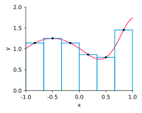
- We will examine more accurate/efficient quadrature methods
Integration
- Question: Why is quadrature important?
- We know how to evaluate many integrals analytically, \[ \int_0^1 e^x{\rm d}x \qquad \text{or} \qquad \int_0^\pi \cos x \,{\rm d}x \]
- But how about \[ \int_1^{2000} \exp(\sin(\cos(\sinh(\cosh(\arctan(\log(x)))))))\,{\rm d}x \]
Integration
- We can numerically approximate this integral
usingscipy.integrate.quad()>>> import scipy >>> from math import * >>> def f(x): ... return exp(sin(cos(sinh(cosh(atan(log(x))))))) >>> scipy.integrate.quad(f, 1, 2000) (1514.7806778270256, 4.231109731546272e-06)
Integration
- Quadrature also generalizes naturally to higher dimensions,
and allows us to compute integrals on irregular domains - For example, we can approximate an integral on a triangle
based on a finite sum of samples at quadrature points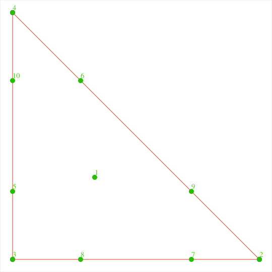 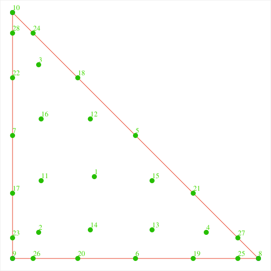 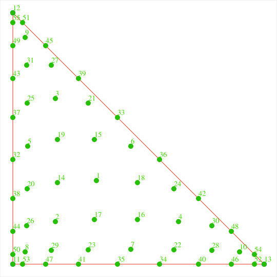
people.sc.fsu.edu/~jburkardt/cpp_src/triangle_fekete_rule_test
Integration
- And then evaluate integrals in complex geometries
by triangulating the domain

Differentiation
- Numerical differentiation is another fundamental tool
- We have already discussed the most common, intuitive approach
to numerical differentiation: finite differences - Examples
- $f'(x) = \frac{f(x+h) - f(x)}{h} + \mathcal{O}(h)$ forward difference
- $f'(x) = \frac{f(x) - f(x-h)}{h} + \mathcal{O}(h)$ backward difference
- $f'(x) = \frac{f(x+h) - f(x-h)}{2h} + \mathcal{O}(h^2)$ centered difference
- $f''(x) = \frac{f(x+h) -2f(x) + f(x-h)}{h^2} + \mathcal{O}(h^2)$ centered, second derivative
Differentiation
- We will see how to derive these and other
finite difference formulas and quantify their accuracy - Wide range of choices, with trade-offs in terms of
- accuracy
- stability
- complexity
Differentiation
- In Unit 0, we saw that finite differences
can be sensitive to rounding error when $h$ is “too small” - But in most applications we obtain sufficient accuracy
with $h$ large enough that rounding error is still negligible - Hence finite differences generally work very well
and provide a very popular approach
to solving problems involving derivatives
ODEs
- The most common situation in which we need
to approximate derivatives is to solve differential equations - Ordinary Differential Equations (ODEs):
Differential equations involving functions of one variable - Examples of problems
- initial value problem (IVP) for a first order ODE
$y'(t) = y^2(t) + t^4 - 6t$
$y(0) = y_0$
- boundary value problem (BVP) for a second order ODE
$y''(x) + 2xy(x) = 1$
$y(0) = y(1) = 0$
- initial value problem (IVP) for a first order ODE
ODEs: IVP
- Newton’s second law of motion
\[ y''(t) = \frac{F(t,y,y')}{m}, \quad y(0) = y_0, \quad y'(0) = v_0 \] where $y(t) \in \mathbb R$ is the position of a particle of mass $m$ at time $t \geq 0$ - This is a scalar ODE to simulate one particle
- An $N$-body problem involves a system of $N$ interacting particles
- For example, $F$ can be gravitational force due to other particles,
and the force on particle $i$ depends on positions of the other particles
ODEs: IVP
- $N$-body problems are the basis of many cosmological simulations
- Recall the galaxy formation simulations from Unit 0
 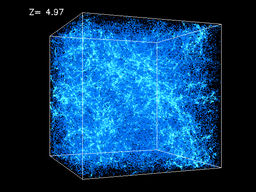 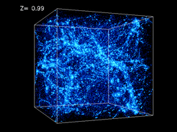 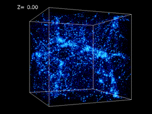
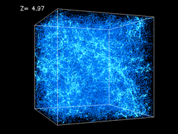 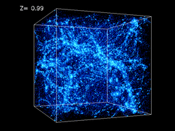 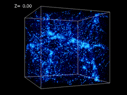 - Computationally expensive when $N$ is large!
 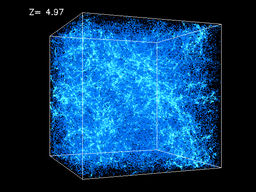 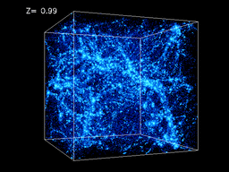 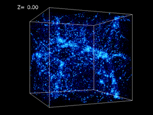
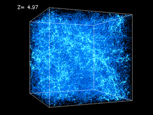 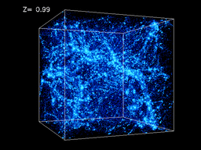 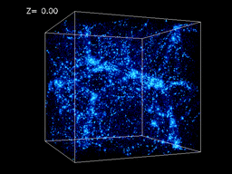ODEs: BVP
- Boundary value problems for ODEs are also important
in many circumstances - The steady-state heat equation for the temperature $u(x)$
\[
-u''(x) = f(x), \quad u(-1) = 0,\quad u'(1) = 0
\]
- apply a heat source $f(x)=1 - x^2$
- impose zero temperature at $x=-1$
- insulate at $x=1$
- Here $u(x)$ is the temperature of a 1D rod
ODEs: BVP
- We can approximate the equation $-u''(x) = f(x)$ with finite differences \[ -\frac{u(x+h) -2u(x) + u(x-h)}{h^2} = f(x) \] and impose $u(-1) = 0$ and $u(1) - u(1 - h) = 0$
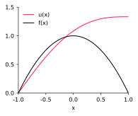
PDEs
- It is also natural to introduce time-dependence
- Now $u(x,t)$ is a function of $x$ and $t$
so derivatives of $u$ are partial derivatives
and we obtain a partial differential equation (PDE) - The time-dependent heat equation for $u(x,t)$
\[
\frac{\partial u}{\partial t} - \frac{\partial^2 u}{\partial x^2} = f(x)
\]
with initial conditions $u(x,0) = 0$
and boundary conditions $u(-1,t) = 0$, $\frac{\partial u}{\partial x}(1,t) = 0$ - This is an initial-boundary value problem (IBVP)
PDEs
- Again, we can approximate the equation $\frac{\partial u}{\partial t} - \frac{\partial^2 u}{\partial x^2} = f(x)$
with finite differences \[ \textstyle \frac{u(x,t)-u(x,t-\Delta t)}{\Delta t}-\frac{u(x+h,t) -2u(x,t) + u(x-h,t)}{h^2} = f(x) \] and impose $u(x,0)=0$, $u(-1,t) = 0$, and $u(1,t) - u(1 - h,t) = 0$
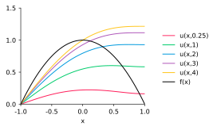
PDEs
- This extends to 2D and 3D domains
- The time-dependent heat equation in a 3D domain $\Omega \subset \mathbb R^3$
for the temperature $u(x,y,z,t)$ \[ \frac{\partial u}{\partial t} -\frac{\partial^2 u}{\partial x^2} - \frac{\partial^2 u}{\partial y^2} - \frac{\partial^2 u}{\partial z^2} = f(x,y,z) \] with initial conditions $u(x,y,z,0)=u_0(x,y,z)$
and boundary conditions $u=0$ on $\partial\Omega$
PDEs
- This equation is typically written as
\[ \frac{\partial u}{\partial t} - \nabla^2 u = f(x,y,z) \] where $\nabla^2 u = \nabla \cdot \nabla u = \frac{\partial^2 u}{\partial x^2} + \frac{\partial^2 u}{\partial y^2} + \frac{\partial^2 u}{\partial z^2}$ - Here we have
- the Laplacian $\nabla^2 = \frac{\partial^2}{\partial x^2} + \frac{\partial^2}{\partial y^2} + \frac{\partial^2}{\partial z^2}$
- the gradient $\nabla = (\frac{\partial}{\partial x}, \frac{\partial}{\partial y}, \frac{\partial}{\partial z})$
PDEs
- We can add a transport term to the heat equation
to obtain the convection-diffusion equation
\[ \frac{\partial u}{\partial t} + \mathbf{w}\cdot\nabla u - \nabla^2 u = f(x,y) \] - Now $u(x,t)$ models the concentration of some substance
in a medium moving with velocity $\mathbf{w}(x,y,t)\in\mathbb{R}^2$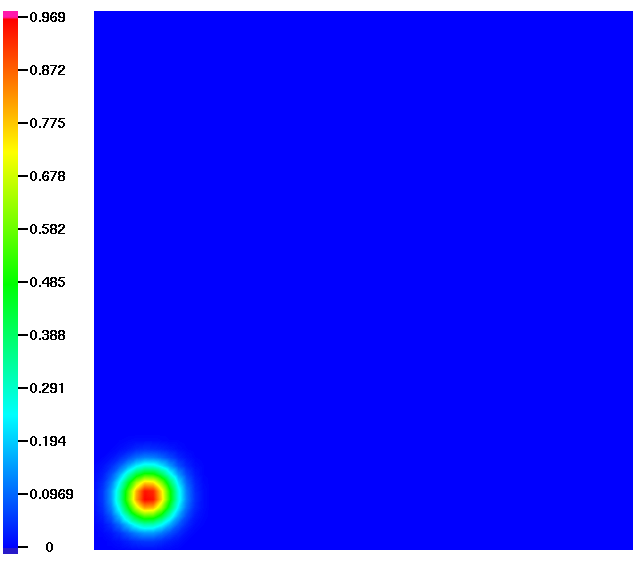 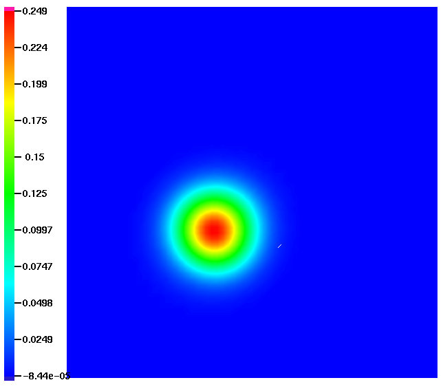 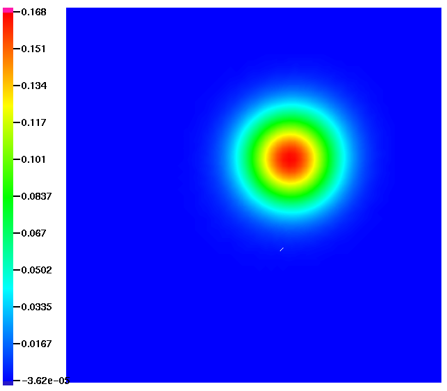
PDEs
- The Navier-Stokes equations describe the motion of viscous liquids \[ \frac{\partial \mathbf{u}}{\partial t} + (\mathbf{u}\cdot\nabla) \mathbf{u} = -\nabla p + \nu \nabla^2 \mathbf{u} \] together with the continuity equation (the liquid is incompressible) \[ \nabla \cdot \mathbf{u}=0 \] for the unknown velocity $\mathbf{u}$ and pressure $p$, where $\nu$ is the viscosity
PDEs
- Numerical methods for PDEs are a major topic in scientific computing
- Recall examples from Unit 0

CFD
Geophysics - In the course, we will focus on the finite difference method
- Alternative methods: finite element, finite volume,
spectral, boundary element, particles, …


Summary
- Numerical calculus includes a wide range of topics
and has important applications - We will consider various algorithms and
analyze their stability, accuracy, and efficiency
Quadrature
- Suppose we want to evaluate the integral $I(f) = \int_a^bf(x)\text{d}x$
- We can proceed as follows
- approximate $f$ using a polynomial interpolant $p_n$
- define $Q_n(f) = \int_a^b p_n(x)\text{d}x$
we can integrate polynomials exactly
- $Q_n(f)$ provides a quadrature formula,
and we should have $Q_n(f) \approx I(f)$ - A quadrature rule based on an interpolant $p_n$
at $n+1$ equally spaced points in $[a,b]$
is known as Newton–Cotes formula of order $n$
Newton–Cotes Quadrature
- Let $x_k = a + kh, k=0,1,\ldots,n$, where $h = (b-a)/n$
- We write the interpolant of $f$ in the Lagrange form as \[ p_n(x) = \sum_{k=0}^n f(x_k)L_k(x), \quad \text{where} \quad \textstyle L_k(x) = \prod_{i=0, i\neq k}^n \frac{x-x_i}{x_k-x_i} \]
- Then \[ Q_n(f) = \int_a^b p_n(x)\text{d}x = \sum_{k=0}^n f(x_k) \htmlClass{color1}{ \int_a^b L_k(x)\text{d}x} = \sum_{k=0}^n \htmlClass{color1}{ w_k} f(x_k) \] where $w_k = \int_a^b L_k(x)\text{d}x \in \mathbb R$ is the $k$-th quadrature weight
Newton–Cotes Quadrature
- Note that quadrature weights do not depend on $f$,
so they can be precomputed and stored- trapezoid rule: $Q_1(f) = \frac{b-a}{2}\left[ f(a) + f(b)\right]$
- Simpson’s rule: $Q_2(f) = \frac{b-a}{6}\left[ f(a) + 4f\left(\frac{a+b}{2}\right) + f(b)\right]$
- We can develop higher-order Newton–Cotes formulas in the same way
Error Estimates
- Let $E_n(f) = I(f) - Q_n(f)$
- Then \[ \begin{aligned} E_n(f) &= \textstyle \int_a^b f(x) \text{d}x - \sum_{k=0}^n w_k f(x_k)\\ &= \textstyle \int_a^b f(x) \text{d}x - \sum_{k=0}^n \left(\int_a^b L_k(x)\text{d}x\right) f(x_k)\\ &= \textstyle \int_a^b f(x) \text{d}x - \int_a^b\left(\sum_{k=0}^n L_k(x) f(x_k) \right)\text{d}x\\ &= \textstyle \int_a^b f(x) \text{d}x - \int_a^b p_n(x) \text{d}x\\ &= \textstyle \int_a^b \left(f(x) - p_n(x) \right)\text{d}x \end{aligned} \]
- From Unit 1, we have an expression for $f(x) - p_n(x)$
Error Estimates
- Recall \[ f(x) - p_n(x) = \frac{f^{n+1}(\theta)}{(n+1)!} (x - x_0) \ldots (x - x_n) \]
- Hence \[ |E_n(f)| \leq \frac{M_{n+1}}{(n+1)!} \int_a^b |(x-x_0)(x-x_1)\cdots(x-x_n)|\text{d}x \] where $M_{n+1} = \max\limits_{\theta \in [a,b]} |f^{n+1}(\theta)|$
Error Estimates
- For the trapezoid rule, the error bound is \[ |E_1(f)| \leq \frac{(b-a)^3}{12}M_2 \]
- The bound for $E_n$ depends directly on the integrand $f$ (via $M_{n+1}$)
- Just like with the Lebesgue constant, it is informative to be able
to compare quadrature rules independently of the integrand
Error Estimates: Another Perspective
- Theorem: If $Q_n$ integrates polynomials of degree $n$ exactly,
then $\exists C_n > 0$ such that $|E_n(f)| \leq C_n \min\limits_{p \in \mathbb{P}_n}\|f-p\|_\infty$ - Proof: For any $p \in \mathbb{P}_n$, we have \[ \begin{aligned} |E_n(f)| &=|I(f) - Q_n(f)| \\ &\leq |I(f) - I(p)| + |I(p) - Q_n(f)|\\ &= |I(f-p)| + |Q_n(f-p)|\\ &\textstyle \leq \int_a^b\text{d}x \|f-p\|_\infty + \left(\sum_{k=0}^n|w_k|\right)\|f-p\|_\infty\\ &= C_n \|f-p\|_\infty\end{aligned} \] where $C_n = b-a + \sum_{k=0}^n|w_k|$ does not depend on $p$
Error Estimates
- Hence a convenient way to compare accuracy of quadrature rules is to
compare the polynomial degree they integrate exactly - Newton–Cotes of order $n$ is based on polynomial interpolation,
hence in general integrates polynomials of degree $n$ exactly - Also follows from the fact that $M_{n+1}=0$ for a polynomial of degree $n$
Runge’s Phenomenon Again
- However, Newton–Cotes formulas are based on interpolation
at equally spaced points - Hence they’re susceptible to Runge’s phenomenon,
and we expect them to be inaccurate for large $n$ - Question: How does this show up in our error bound? \[ |E_n(f)| \leq C_n \min\limits_{p \in \mathbb{P}_n}\|f-p\|_\infty \]
Runge Phenomenon Again
- Answer: In the constant $C_n$
- Recall that $C_n = b-a + \sum_{k=0}^n|w_k|$, and that $w_k = \int_a^b L_k(x) \text{d}x$

- If the $L_k$ blow up due to equally spaced points, so does $C_n$

Runge Phenomenon Again
- In fact, we know that $\sum_{k=0}^n w_k = b-a$, why?
- This tells us that if all the $w_k$ are positive, then \[ C_n = b-a + \sum_{k=0}^n|w_k| = b-a + \sum_{k=0}^nw_k = 2(b-a) \]
- If weights are positive, then $C_n$ is a constant (independent of $n$)
and the quadrature converges to the exact integral \[ Q_n(f) \to I(f)\quad\text{as}\;n \to \infty \]
Runge Phenomenon Again
- But with Newton–Cotes, quadrature weights become negative for $n>8$
(in example above, $L_{10}(x)$ would clearly yield $w_{10} < 0$) - Key point: Newton–Cotes is not useful for large $n$
- However, there are two natural ways to get quadrature rules
that converge as $n\to\infty$- integrate piecewise polynomial interpolant
- do not use equally spaced interpolation points
- We consider piecewise polynomial-based quadrature rules first
Composite Quadrature Rules
- Integrating a piecewise polynomial interpolant
leads to a composite quadrature rule - Suppose we divide $[a,b]$ into $m$ subintervals,
each of width $h = (b-a)/m$, and $x_i = a + ih$, $i=0,1,\ldots,m$ - Then we have \[ I(f) = \int_a^b f(x) \text{d}x = \sum_{i=1}^m \int_{x_{i-1}}^{x_i} f(x) \text{d}x \]
Composite Trapezoid Rule
- Composite trapezoid rule: Apply trapezoid rule to each interval \[ \int_{x_{i-1}}^{x_i} f(x) \text{d}x \approx \frac{1}{2}h[f(x_{i-1})+f(x_i)] \]
- The composite quadrature is denoted as \[ \begin{aligned} Q_{1,h}(f) &= \sum_{i=1}^m \frac{1}{2}h[f(x_{i-1})+f(x_i)]\\ &= h\left[ \frac{1}{2}f(x_0) + f(x_1) + \cdots + f(x_{m-1}) + \frac{1}{2}f(x_m)\right]\end{aligned} \]
Composite Trapezoid Rule
- Composite trapezoid rule error analysis \[ E_{1,h}(f) \textstyle= I(f) - Q_{1,h}(f) = \sum_{i=1}^m\left[ \int_{x_{i-1}}^{x_i} f(x)\text{d}x - \frac{1}{2}h[f(x_{i-1})+f(x_i)]\right] \]
- Hence, \[ \begin{aligned} \htmlClass{color5}{ |E_{1,h}(f)|} &\leq \textstyle\sum_{i=1}^m\left| \int_{x_{i-1}}^{x_i} f(x)\text{d}x - \frac{1}{2}h[f(x_{i-1})+f(x_i)]\right|\\ &\leq \frac{h^3}{12} \sum_{i=1}^m \textstyle\max_{\theta \in [x_{i-1},x_i]} |f''(\theta)|\\ &\leq \frac{h^3}{12} m\|f''\|_\infty\\ &= \htmlClass{color5}{ \frac{h^2}{12}(b-a)\|f''\|_\infty}\end{aligned} \]
Composite Simpson Rule
- We can obtain composite Simpson’s rule in the same way
- Suppose that $[a,b]$ is divided into $2m$ intervals by the points
$x_i = a + ih$, $\;i=0,\ldots,2m$, where $h=(b-a)/2m$ - Applying Simpson’s rule on each interval $[x_{2i-2},x_{2i}]$, $i=1,\ldots,m$ yields \[ \begin{aligned} Q_{2,h}(f) &= \frac{h}{3}[f(x_0) + 4f(x_1) + 2f(x_2) + 4f(x_3) + \cdots \\ & \qquad + 2f(x_{2m-2}) + 4f(x_{2m-1}) + f(x_{2m})]\end{aligned} \]
- See [examples/unit3/quadcomp.py]
with composite trapezoid and Simpson’s rules
Adaptive Quadrature
- Composite quadrature rules are very flexible,
can be applied to intervals of variable sizes - We should use smaller intervals where $f$ varies rapidly,
and larger intervals where $f$ varies slowly - This can be achieved by adaptive quadrature:
- Initialize to $m=1$ (one interval)
- On each interval, evaluate quadrature rule
and estimate quadrature error - If error estimate is larger than a given tolerance on interval $i$,
subdivide into two smaller intervals and return to step 2
- Question: How can we estimate the quadrature error on an interval?
Adaptive Quadrature
- One straightforward way to estimate quadrature error on interval $i$
is to compare to a more refined result for interval $i$ - Let $I^i(f)$ denote the exact integral and
$Q_h^i(f)$ denote quadrature approximation on interval $i$ - Let $\hat Q_h^i(f)$ denote a more refined quadrature approximation on interval $i$,
e.g. obtained by subdividing interval $i$ - Then for the error on interval $i$, we have \[ |I^i(f) - Q_h^i(f)| \leq |I^i(f) - \hat Q_h^i(f)| + |\hat Q_h^i(f) - Q_h^i(f)| \]
- Suppose we can neglect $|I^i(f) - \hat Q_h^i(f)|$ so that we use
$|\hat Q_h^i(f) - Q_h^i(f)|$ as a computable estimator for $|I^i(f) - Q_h^i(f)|$
Gauss Quadrature
- Next we consider the second approach to developing
more accurate quadrature rules: unevenly spaced quadrature points - Recall that we can compare accuracy of quadrature rules
based on the polynomial degree that is integrated exactly - So far, we have only used equally spaced points
- More accurate quadrature rules can be derived by choosing the $x_i$
to maximize the degree of polynomials integrated exactly - Resulting family of quadrature rules is called Gauss quadrature
Gauss Quadrature
- With $n+1$ quadrature points and $n+1$ quadrature weights,
we have $2n+2$ parameters to choose - We might hope to integrate a polynomial with $2n+2$ parameters,
i.e. of degree $2n+1$ - It can be shown that this is possible and leads to Gauss quadrature
- Again the idea is to integrate a polynomial interpolant,
but we choose a specific set of interpolation points:
Gauss quadrature points are roots of a Legendre polynomial
Gauss Quadrature
- Legendre polynomials $\{P_0, P_1, \ldots, P_n\}$ form
an orthogonal basis for $\mathbb{P}_n$ in the $L_2$ inner product \[ \int_{-1}^1 P_m(x) P_n(x) \text{d}x = \begin{cases} \frac{2}{2n+1}, \qquad m=n\\ 0, \qquad \quad ~\, m\neq n \end{cases} \]
Gauss Quadrature
- Legendre polynomials satisfy a recurrence relation \[ \begin{aligned} P_0(x) &= 1\\ P_1(x) &= x\\ (n+1)P_{n+1}(x) &= (2n+1)xP_n(x) - nP_{n-1}(x) \end{aligned} \]
- The first six Legendre polynomials
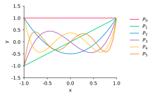
Gauss Quadrature
- We can find the roots of $P_n(x)$ and derive the $n$-point
Gauss quadrature rule in the same way as for Newton–Cotes:
integrate the Lagrange interpolant - Gauss quadrature rules have been extensively tabulated for $x \in [-1,1]$
Number of points Quadrature points Quadrature weights 1 0 2 2 $-1/{\sqrt{3}}, 1/{\sqrt{3}}$ $1, 1$ 3 $-\sqrt{3/5}, 0, \sqrt{3/5}$ $5/9, 8/9, 5/9$ … … … - Key point: Gauss quadrature weights are always positive,
so Gauss quadrature converges as $n\to \infty$Gauss Quadrature Points
- Points cluster toward $\pm 1$ which prevents Runge’s phenomenon!
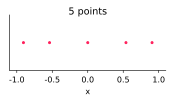 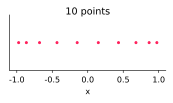
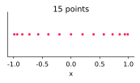 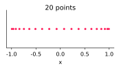
Finite Differences
Finite Differences
- Finite differences approximate a derivative of function \[ f : \mathbb R\to \mathbb R \] using samples of $f$ on a finite set of points
- The points often form a uniform grid,
so the approximation at point $x$ involves values \[ \ldots,\;\;f(x-2h),\;\; f(x-h),\;\; f(x),\;\; f(x+h),\;\; f(x+2h),\;\; \ldots \]
Finite Differences
- An approximation of the first derivative at point $x$ can be derived
from Taylor expansion about $x$ evaluated at $x+h$ \[ f(x+h) = f(x) + f'(x)h + \frac{f''(x)}{2}h^2 + \frac{f'''(x)}{6}h^3 + \cdots \] - Solving for $f'(x)$ we get the forward difference formula \[ \begin{aligned} f'(x) &= \frac{f(x+h) - f(x)}{h} - \frac{f''(x)}{2}h + \cdots\\ &\approx \htmlClass{color1}{ \frac{f(x+h) - f(x)}{h}}\end{aligned} \]
- Here we neglected an $\mathcal{O}(h)$ term
Finite Differences
- The same expansion evaluated at $x-h$ \[ f(x-h) = f(x) - f'(x)h + \frac{f''(x)}{2}h^2 - \frac{f'''(x)}{6}h^3 + \cdots \] yields the backward difference formula \[ f'(x) \approx \htmlClass{color1}{ \frac{f(x) - f(x-h)}{h}} \]
- Again, we neglected an $\mathcal{O}(h)$ term
Finite Differences
- Subtracting Taylor expansions for $f(x+h)$ and $f(x-h)$
gives the centered difference formula \[ \begin{aligned} f'(x) &= \frac{f(x+h) - f(x-h)}{2h} - \frac{f'''(x)}{6}h^2 + \cdots\\ &\approx \htmlClass{color1}{ \frac{f(x+h) - f(x-h)}{2h}}\end{aligned} \] - This one has a higher order, we neglected an $\mathcal{O}(h^2)$ term
Finite Differences
- Adding Taylor expansions for $f(x+h)$ and expansion for $f(x-h)$
gives the centered difference formula for the second derivative\[ \begin{aligned} f''(x) &= \frac{f(x+h) - 2f(x) + f(x-h)}{h^2} - \frac{f^{(4)}(x)}{12}h^2 + \cdots\\ &\approx \htmlClass{color1}{ \frac{f(x+h) -2f(x) + f(x-h)}{h^2}}\end{aligned} \]
- Again, we neglected an $\mathcal{O}(h^2)$ term
Finite Difference Stencils
- The pattern of points involved in a finite difference
approximation is called a stencil - Examples of stencils, $x_i$ is the point of interest
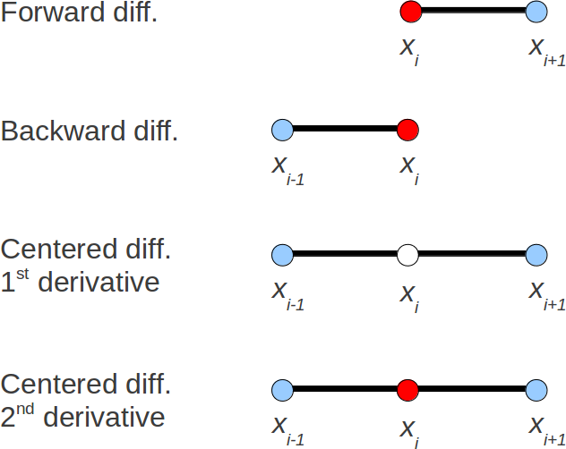
Finite Differences
- By evaluating a Taylor expansion on stencils with more points,
we can derive:- approximations with a higher order of accuracy
- approximations for higher derivatives
- However, there is a more systematic way: differentiate an interpolant
Finite Differences
- Linear interpolant through $(x,f(x))$ and $(x+h,f(x+h))$ is \[ p_1(t) = f(x)\frac{x+h-t}{h} + f(x+h) \frac{t-x}{h} \]
- Differentiating $p_1$ gives \[ p_1'(t) = \frac{f(x+h) - f(x)}{h} \] which is the forward difference formula
- Exercise: Derive the backward difference formula using interpolation
Finite Differences
- Quadratic interpolant $p_2$ from interpolation points $x-h,\;x,\;x+h$
gives the centered difference formula for $f'(x)$:- differentiate $p_2$ to get a linear polynomial $p_2'$
- evaluate $p_2'(x)$ to get centered difference formula for $f'(x)$
- Also, $p_2''(x)$ gives the centered difference formula for $f''$
- This approach can be applied to
- higher degree interpolants (higher order, higher derivatives)
- unevenly spaced points (adaptive approximations)
Differentiation Matrices
- So far we have talked about finite difference formulas
to approximate $f'(x)$ at a single point $x$ - Now consider a grid $x_1,\ldots,\;x_n\in\mathbb{R}$ and vectors of
- values $F= [f(x_1),\ldots,\;f(x_n)]^T \in \mathbb R^n$
- derivatives $F' = [f'(x_1),\ldots,\;f'(x_n)]^T \in \mathbb R^n$
- approximations $\tilde{F}' = [\tilde{f}'(x_1),\ldots,\;\tilde{f}'(x_n)]^T \in \mathbb R^n$
- Introduce a mapping \[ D:\mathbb{R}^n\to\mathbb{R}^n \] from values $F$ to approximations $\tilde{F}'$
Differentiation Matrices
- Since the exact differentiation is a linear operation,
it is natural to assume that $D$ is a linear mapping,
i.e. $D(\alpha F + \beta G) = \alpha DF + \beta DG$ - Then $D$ corresponds to a square matrix $D\in\mathbb{R}^{n\times n}$
called a differentiation matrix - Row $i$ of $D$ corresponds to the finite difference formula for $f'(x_i)$ \[ D_{(i,:)}F \approx f'(x_i) \]
- Note that discretizations of PDEs often involve
nonlinear approximations of derivatives (will be considered later)
Example: Differentiation Matrix
- Forward difference corresponds to a bidiagonal matrix
with elements $D_{ii} = -\frac{1}{h},\;D_{i,i+1} = \frac{1}{h}$>>> import numpy as np >>> import matplotlib.pyplot as plt >>> n = 11 >>> h = 1 / (n - 1) >>> D = np.diag(-np.ones(n) / h) + np.diag(np.ones(n - 1) / h, 1) >>> plt.spy(D) >>> plt.show()
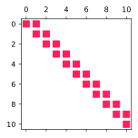
Example: Differentiation Matrix
- But the last row is incorrect,
$D_{n,n+1} = \frac{1}{h}$ is ignored!
Example: Differentiation Matrix
- Boundary points need different formulas
- For example, use the backward difference in the last row
$D_{n,n-1} = -\frac{1}{h},\;D_{nn} = \frac{1}{h}$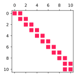
- See [examples/unit3/diff_matr.py]
Initial Value Problems for ODEs
Initial Value Problems for ODEs
- An initial value problem for an ODE has the form
\[
y'(t) = f(t,y(t)), \quad y(0) = y_0
\]
where
- $y(t) \in \mathbb{R}^n$ is an unknown vector function
- $f : \mathbb{R}\times \mathbb{R}^n \to \mathbb{R}^n$ is the right-hand side
- $y(0) = y_0 \in \mathbb{R}^n$ is the initial condition
- The order of an ODE is the highest-order derivative that appears
- Therefore, $y'(t) = f(t,y)$ is a first order ODE
Initial Value Problems for ODEs
- We only consider first order ODEs since higher order problems
can be transformed to first order by introducing extra variables - For example, recall Newton’s second law: \[ y''(t) = \frac{F(t,y,y')}{m}, \qquad y(0) = y_0, \;\;y'(0) = v_0 \]
- Introduce $v = y'$, then the original problem is equivalent to \[ \begin{aligned} v'(t) &= \frac{F(t,y,v)}{m}\\ y'(t) &= v(t)\end{aligned} \] and $y(0) = y_0$, $v(0) = v_0$
Example: A Predator–Prey Model
- The Lotka–Volterra equation is a two-variable nonlinear ODE
that models the evolution of populations of two species \[ y' = \left[ \begin{array}{c} y_1(\alpha_1 - \beta_1 y_2) \\ y_2(-\alpha_2 + \beta_2 y_1) \end{array} \right] \equiv f(y) \] - Unknowns are the populations $y_1$ (prey) and $y_2$ (predator)
- Parameters are $\alpha_1$ (birth rate), $\alpha_2$ (death rate), $\beta_1$, and $\beta_2$ (interactions)
- See [examples/unit3/lotka_volterra.py]
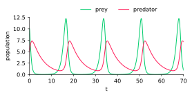
ODEs in Python
scipy.integratehas functions to solve initial value problems for ODEsodeint(), useslsoda()from FORTRAN libraryodepacksolve_ivp(), modern alternative with various methods
Forward Euler Method
- Suppose we want to compute an approximate solution to \[ y' = f(t,y),\quad y(0) = y_0 \] at points $t_k = kh$ for $k = 0,1,\ldots$
- Denote the approximation as $y_k\approx y(t_k)$
- Forward Euler method: use forward difference for $y'$ \[ \frac{y_{k+1} - y_k}{h} = f(t_k,y_k),\quad k = 0,1,\ldots \]
- See [examples/unit3/euler.py], Lotka-Volterra solved with forward Euler
Forward Euler Method
- Quadrature-based interpretation:
integrating the ODE $y' = f(t,y)$ from $t_k$ to $t_{k+1}$ gives \[ y(t_{k+1}) = y(t_k) + \int_{t_k}^{t_{k+1}} f(s,y(s))\text{d}s \] - Apply $n=0$ Newton–Cotes quadrature to $\int_{t_k}^{t_{k+1}} f(s,y(s))\text{d}s$
based on interpolation point $t_k$ \[ \int_{t_k}^{t_{k+1}} f(s,y(s))\text{d}s \approx (t_{k+1} - t_k) f(t_k,y_k) = hf(t_k,y_k) \] to get the forward Euler method \[ y_{k+1} = y_k + h f(t_k,y_k) \]
Backward Euler Method
- We can derive other methods using the same quadrature-based approach
- Apply $n=0$ Newton–Cotes quadrature to $\int_{t_k}^{t_{k+1}} f(s,y(s))\text{d}s$
based on interpolation point $t_{k+1}$ \[ \int_{t_k}^{t_{k+1}} f(s,y(s))\text{d}s \approx (t_{k+1} - t_k) f(t_{k+1},y_{k+1}) = hf(t_{k+1},y_{k+1}) \] to get the backward Euler method \[ y_{k+1} = y_k + h f(t_{k+1},y_{k+1}) \]
Backward Euler Method
- Forward Euler method is an explicit method:
we have an explicit formula for $y_{k+1}$ in terms of $y_k$ \[ y_{k+1} = y_k + h f(t_k,y_k) \] - Backward Euler is an implicit method:
we have to solve a nonlinear equation for $y_{k+1}$ \[ y_{k+1} = y_k + h f(t_{k+1},y_{k+1}) \]
Backward Euler Method
- For example, approximate $y' = 2\sin(ty)$ using backward Euler
- at the first step $k=0$, we get \[ y_1 = y_0 + h\sin(t_1 y_1) \]
- to compute $y_1$, let $F(y_1) = y_1 - y_0 - h\sin(t_1 y_1)$
and solve $F(y_1) = 0$ (e.g. using Newton’s method)
- Implicit methods are more complicated and
more computationally expensive to make one time step - However, they can be more stable and accurate (to be seen shortly)
Trapezoid Method
- Higher-order quadrature leads to more accurate methods
- Apply $n=1$ Newton–Cotes (trapezoid rule) to $\int_{t_k}^{t_{k+1}} f(s,y(s))\text{d}s$
based on interpolation points $t_k$, $t_{k+1}$ \[ \int_{t_k}^{t_{k+1}} f(s,y(s))\text{d}s \approx \frac{h}{2} (f(t_{k},y_{k})+f(t_{k+1},y_{k+1})) \] to get the trapezoid method \[ y_{k+1} = y_k + \frac{h}{2}\left(f(t_{k},y_{k}) + f(t_{k+1},y_{k+1})\right) \]
One-Step Methods
- The three methods we have considered so far have the form \[ \begin{aligned} y_{k+1} &= y_k + h\Phi(t_k,y_k;h) ~~\qquad\qquad\qquad \text{(explicit)}\\ y_{k+1} &= y_k + h\Phi(t_{k+1},y_{k+1};h) ~~\qquad\qquad \text{(implicit)}\\ y_{k+1} &= y_k + h\Phi(t_{k},y_{k},t_{k+1},y_{k+1};h) \qquad \text{(implicit)}\end{aligned} \] where the choice of the function $\Phi$ determines our method
- These are called one-step methods: $y_{k+1}$ depends only on $y_{k}$
- In a multistep method, $y_{k+1}$ depends on more values $y_k, y_{k-1}, y_{k-2}, \ldots$
(will be discussed briefly later)
Convergence
Convergence
- We now consider whether one-step methods converge
to the exact solution as $h \to 0$ - Convergence is a crucial property since we want to be able
to approach the exact solution at an arbitrary tolerance
by taking a sufficiently small $h>0$
Convergence
- Define the global error $e_k$
as the total accumulated error at $t=t_k$ \[ e_k = y(t_k) - y_k \] - Define the truncation error $T_k$ as the error introduced at one step $k$,
starting from the exact solution, divided by $h$ - For example, the truncation error of an explicit one-step method is \[ T_k = \frac{y(t_{k+1}) - y(t_k)}{h} - \Phi(t_k,y(t_k);h) \]
Convergence
- The truncation error defined above determines
the local error introduced by the ODE approximation - For example, suppose $y_k = y(t_k)$, then for the case above we have \[ hT_k = y(t_{k+1}) - y_k - h\Phi(t_k,y_k;h) = y(t_{k+1}) - y_{k+1} \]
- Therefore, $hT_k$ is the error introduced in one step of our ODE approximation
- The local error accumulates and determines the global error
- Now let’s consider the global error of the Euler method in detail
Convergence
- Theorem: Suppose we apply forward Euler method to
\[
y' = f(t,y)
\]
for steps $k=0,1,\ldots, M-1$, where $f$ satisfies a Lipschitz condition
\[
|f(t,u) - f(t,v)| \leq L_f |u - v|,
\]
where $L_f \in \mathbb{R}_{>0}$ is called a Lipschitz constant.
Then the global error is bounded as \[ |e_k| \leq \frac{\left( e^{L_f t_k} - 1\right)}{L_f} \left[\max\limits_{0\leq j \leq k-1}|T_j| \right],\quad k = 0,1,\ldots,M \] where $T_j$ is the truncation error of the method
Convergence
Proof (1/3)
- From the definition of the truncation error, we have \[ y(t_{k+1}) = y(t_k) + h f(t_k,y(t_k);h) + hT_k \]
- Subtracting $y_{k+1} = y_k + hf(t_k,y_k;h)$ gives \[ e_{k+1} = e_k + h\left[ f(t_k,y(t_k)) - f(t_k, y_k) \right] + hT_k \] therefore \[ |e_{k+1}| \leq |e_k| + hL_f|e_k| + h|T_k| = (1+hL_f)|e_k| + h|T_k| \]
Convergence
Proof (2/3)
- This gives a geometric progression, e.g. for $k=2$ we have \[ \begin{aligned} |e_3| &\leq (1+hL_f)|e_2| + h|T_2|\\ &\leq (1+hL_f)((1+hL_f)|e_1| + h|T_1|) + h|T_2|\\ &\leq (1 + hL_f)^2 h |T_0| + (1 + hL_f)h|T_1| + h |T_2|\\ &\leq h\left[\max_{0\leq j\leq 2}|T_j|\right]\sum_{j=0}^2 (1 + hL_f)^j\end{aligned} \]
- In general \[ |e_k| \leq h\left[\max_{0\leq j\leq k-1}|T_j|\right]\sum_{j=0}^{k-1} (1 + hL_f)^j \]
Convergence
Proof (3/3)
- Use the formula for the sum \[ \sum_{j=0}^{k-1} r^j = \frac{1-r^{k}}{1-r} \] with $r = (1 + hL_f)$, to get \[ |e_{k}| \leq \frac{1}{L_f} \left[\max\limits_{0\leq j \leq k-1}|T_j| \right]((1+hL_f)^k - 1) \]
- Finally, use the bound $1+hL_f \leq \exp(hL_f)$
to get the desired result$\;\square$
Convergence: Lipschitz Condition
- A simple case where we can calculate a Lipschitz constant
is if $y \in \mathbb{R}$ and $f$ is continuously differentiable - Then from the mean value theorem we have \[ |f(t,u) - f(t,v)| = \Big|\frac{\partial f}{\partial y}(t,\theta)\Big||u-v|, \] for $\theta \in (u,v)$
- Therefore, a Lipschitz constant is given by \[ L_f = \max\limits_{\substack{t\in[0,t_M]\\ \theta\in(u,v)}} |f_y(t,\theta)| \]
Convergence: Lipschitz Condition
- However, the Lipschitz condition is weaker,
$f$ does not have to be continuously differentiable - For example, let $f(x) = |x|$,
then $|f(x) - f(y)| = ||x| - |y|| \leq |x-y|$,
and therefore $L_{f} = 1$
Convergence
- For a fixed $t$ (i.e. $t=kh$, as $h\to 0$ and $k \to \infty$),
the factor $(e^{L_f t} - 1)/L_f$ in the bound is a constant - Hence the global convergence rate for each fixed $t$
is given by the dependence of $T_k$ on $h$ - Our proof was for forward Euler, but the same dependence
of global error on local error holds in general - We say that a method has order of accuracy $p$ if \[ |T_k| = \mathcal{O}(h^p) \]
- From our error bound, ODE methods with order $\geq 1$ are convergent
Order of Accuracy
- Forward Euler is first order accurate \[ \begin{aligned} T_k &= \frac{y(t_{k+1}) - y(t_k)}{h} - f(t_k,y(t_k))\\ &= \frac{y(t_{k+1}) - y(t_k)}{h} - y'(t_k)\\ &= \frac{y(t_{k}) + hy'(t_k) + h^2y''(\theta)/2 - y(t_k)}{h} - y'(t_k)\\ &= \frac{h}{2}y''(\theta)\end{aligned} \]
Order of Accuracy
- Backward Euler is first order accurate \[ \begin{aligned} T_k &= \frac{y(t_{k+1}) - y(t_k)}{h} - f(t_{k+1},y(t_{k+1}))\\ &= \frac{y(t_{k+1}) - y(t_k)}{h} - y'(t_{k+1})\\ &= \frac{y(t_{k+1}) - y(t_{k+1}) + hy'(t_{k+1}) - h^2y''(\theta)/2}{h} - y'(t_{k+1})\\ &= -\frac{h}{2}y''(\theta)\end{aligned} \]
Order of Accuracy
- Trapezoid method is second order accurate
- Let’s prove this using a quadrature error bound, recall that \[ \frac{y(t_{k+1}) - y(t_k)}{h} = \frac{1}{h}\int_{t_k}^{t_{k+1}} f(s,y(s))\text{d}s \] so the truncation error is \[ T_k = \frac{1}{h}\int_{t_k}^{t_{k+1}} f(s,y(s))\text{d}s - \frac{1}{2}\left[f(t_{k},y(t_{k})) + f(t_{k+1},y(t_{k+1}))\right] \]
Order of Accuracy
- Then \[ \begin{aligned} T_k &= \frac{1}{h}\left[\int_{t_k}^{t_{k+1}} f(s,y(s))\text{d}s - \frac{h}{2}\left(f(t_{k},y(t_{k})) + f(t_{k+1},y(t_{k+1}))\right)\right]\\ &= \frac{1}{h}\left[\int_{t_k}^{t_{k+1}} y'(s)\text{d}s - \frac{h}{2}\left(y'(t_k) + y'(t_{k+1})\right)\right]\end{aligned} \]
- Therefore, $T_k$ is determined by the trapezoid quadrature rule
error for the integrand $y'$ on $t \in [t_k,t_{k+1}]$ - Recall that trapezoid quadrature rule error bound
depends on $(b-a)^3 = (t_{k+1}-t_k)^3 = h^3$ and hence \[ T_k = \mathcal{O}(h^2) \]
Order of Accuracy
- The table below shows global error at $t=1$ for $y' = y$, $y(0) = 1$
solved using forward Euler and trapezoid methods$h$ $E_\text{Euler}$ $E_\text{trap}$ 2.0e-2 2.67e-2 9.06e-05 1.0e-2 1.35e-2 2.26e-05 5.0e-3 6.76e-3 5.66e-06 2.5e-3 3.39e-3 1.41e-06
\[ h \to h/2 \implies E_\text{Euler} \to E_\text{Euler}/2 \]
\[ h \to h/2 \implies E_\text{trap} \to E_\text{trap}/4 \]
Stability
Stability
- So far we have discussed convergence of numerical methods
for initial value problems for ODEs, i.e. asymptotic behavior as $h \to 0$ - It is also crucial to consider stability of numerical methods:
for what values of $h$ is the method stable? - We want the method to be stable for as large a step size as possible
- Taking fewer larger steps can be more efficient
Stability
- In this context, the key idea is that we want our methods to inherit the stability properties of the ODE
- If an ODE is unstable, then we can’t expect our discretization to be stable
- But if an ODE is stable, we want our discretization to be stable as well
- Hence we first discuss ODE stability, independent of numerical discretization
ODE Stability
- Consider an ODE $y' = f(t,y)$, and
- let $y(t)$ be the solution for initial condition $y(0) = y_0$
- let $\hat y(t)$ be the solution for initial condition $\hat y(0) = \hat y_0$
- The ODE is stable if:
for every $\epsilon > 0$, $\exists \delta > 0$ such that \[ \| \hat y_0 - y_0 \| \leq \delta \implies \| \hat y(t) - y(t) \| \leq \epsilon \] for all $t \geq 0$ - Small input perturbation leads to small perturbation in the solution
ODE Stability
- A stronger form of stability, asymptotic stability:
$\| \hat y(t) - y(t) \| \to 0$ as $t\to \infty$, perturbations decay over time - These two definitions of stability are properties of the ODE,
independent of any numerical algorithm - In ODEs (and PDEs), it is standard to use stability to refer to sensitivity
of both the mathematical problem and numerical approximations
Example: ODE Stability
- Stability of $y' = \lambda y$ for different values of $\lambda$
- solution $y= y_0 e^{\lambda t}$ for $y_0=1$
- perturbed solution $\hat{y}= \hat{y}_0 e^{\lambda t}$ for $\hat{y}_0=0.9$
- difference $|\hat{y}-y|= |\hat{y}_0-y_0| e^{\lambda t}$
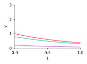
$\lambda = -1$
asymptotically stable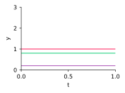
$\lambda = 0$
stable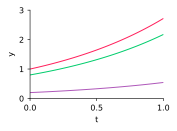
$\lambda = 1$
unstableODE Stability
- More generally, we can allow $\lambda$ to be a complex number: $\lambda = a + ib$
- Then $y(t) = y_0e^{(a + ib) t} = y_0e^{at}e^{ibt} = y_0 e^{at}(\cos(bt) + i\sin(bt))$
- The key issue for stability is now the sign of $a = \mathop{\mathrm{Re}}(\lambda)$
- $\mathop{\mathrm{Re}}(\lambda) < 0 \implies$ asymptotically stable
- $\mathop{\mathrm{Re}}(\lambda) = 0 \implies$ stable
- $\mathop{\mathrm{Re}}(\lambda) > 0 \implies$ unstable
ODE Stability
- Understanding the stability of a scalar equation $y' = \lambda y$
can extend to the case $y' = Ay$, where $y \in \mathbb{R}^n, A \in \mathbb{R}^{n\times n}$ - Suppose that $A$ is diagonalizable, so that we have
the eigenvalue decomposition $A = V \Lambda V^{-1}$, where- $\Lambda = \mathop{\mathrm{diag}}(\lambda_1, \lambda_2,\ldots,\lambda_n)$, where the $\lambda_j$ are eigenvalues
- $V$ is matrix with eigenvectors as columns, $v_1, v_2,\ldots,v_n$
- Then, \[ y' = Ay = V\Lambda V^{-1}y \implies V^{-1} y' = \Lambda V^{-1}y \implies \htmlClass{color5}{ z' = \Lambda z} \] where $z = V^{-1}y$ and $z_0 = V^{-1}y_0$
ODE Stability
- Hence we have $n$ decoupled ODEs for $z$,
and the stability of $z_i$ is determined by $\lambda_i$ for each $i$ - Since $z$ and $y$ are related by the matrix $V$,
then if all $z_i$ are stable then all $y_i$ will also be stable - If Re$(\lambda_i) \leq 0$ for $i=1,\ldots,n$ then $y' = Ay$ is a stable ODE
- Next we consider stability of numerical approximations to ODEs
ODE Stability
- Numerical approximation to an ODE is stable if:
for every $\epsilon > 0$, $\exists \delta > 0$ such that \[ \| \hat y_0 - y_0 \| \leq \delta \implies \| \hat y_k - y_k \| \leq \epsilon \] for all $k \geq 0$ - Key idea: We want to develop numerical methods
that mimic the stability properties of the exact solution - That is, if the ODE is unstable,
we should not expect the numerical approximation to be stable
Stability
- Since ODE stability is problem dependent,
we need a standard test problem - The standard test problem is the simple scalar ODE \[ y' = \lambda y \]
- Behavior of a discretization on this test problem
gives insight into behavior in general - Ideally, to reproduce stability of the ODE $y' = \lambda y$,
we want our discretization to be stable for all Re$(\lambda) \leq 0$
Stability: Forward Euler
- Consider forward Euler discretization of $y' = \lambda y$ \[ y_{k+1} = y_k + h\lambda y_k = (1+h\lambda)y_k \implies \htmlClass{color5}{ y_k = (1+h\lambda)^ky_0} \]
- Here $1+h\lambda$ is called the amplification factor
- Stability means $|1 + h\lambda| \leq 1$
- Let $h\lambda = a + ib$, then $|1 + a + ib|^2 \leq 1^2 \implies (1+a)^2 + b^2 \leq 1$
Stability: Forward Euler
- Therefore, forward Euler is stable for $h\lambda \in \mathbb{C}$
inside the circle of radius 1 centered at $(-1,0)$ - This is a subset of the left-half plane $\mathrm{Re}(h\lambda) \leq 0$
- We say that the forward Euler method is conditionally stable:
if $\mathrm{Re}(\lambda) \leq 0$, we have to restrict $h$ to ensure stability
Stability: Forward Euler
- For example, given $\lambda<0$, we require \[ -2 \leq h\lambda \leq 0 \implies h \leq -2/\lambda \]
- Hence “larger negative $\lambda$” implies tighter restriction on $h$: \[ \begin{aligned} \lambda = -10 &\implies& h \leq 0.2\\ \lambda = -200 &\implies& h \leq 0.01\end{aligned} \]
- See [examples/unit3/euler_stab.py], forward Euler stability
Stability: Backward Euler
- In comparison, consider backward Euler for $y' = \lambda y$ \[ y_{k+1} = y_k + h\lambda y_{k+1} \implies \htmlClass{color5}{ y_k = \big(\tfrac{1}{1-h\lambda}\big)^ky_0} \]
- Here the amplification factor is $\frac{1}{1-h\lambda}$
and the stability condition is $\frac{1}{|1-h\lambda|} \leq 1$
Stability: Backward Euler
- Let $h\lambda = a + ib$, then $1^2 \leq |1-(a+ib)|^2$, i.e. $(1-a)^2 + b^2 \geq 1$
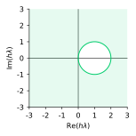
- If Re$(\lambda) \leq 0$, this is satisfied for any $h > 0$
- We say that the backward Euler method is unconditionally stable:
if $\mathrm{Re}(\lambda) \leq 0$, no restriction on $h$ for stability
Stability
- Generally, implicit methods have larger stability regions than explicit
and therefore allow us to take larger time steps - But explicit methods require less work per step
since we do not need to solve for $y_{k+1}$ - Therefore there is a tradeoff:
the choice of method should depend on the problem
Stability Regions
ODE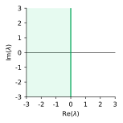
$y'=\lambda y$
$y(t) = y_0 e^{\lambda t}$
$|e^{\lambda}| \leq 1$
forward Euler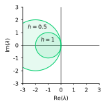
$y_{k+1}=y_k+h\lambda y_k$
$y_k=y_0 (1+h\lambda)^k$
$|1+h\lambda|\leq1$
backward Euler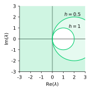
$y_{k+1}=y_k+h\lambda y_{k+1}$
$y_k=y_0 / (1-h\lambda)^k$
$|1 /(1-h\lambda)|\leq1$
Runge–Kutta Methods
- Runge–Kutta (RK) methods are a popular class of one-step methods
- Aim to achieve higher order accuracy by combining evaluations of $f$
at several points in $[t_k,t_{k+1}]$ - RK methods all fit within a general framework,
which can be described in terms of Butcher tableaus - We will first consider two RK examples:
two evaluations of $f$ and four evaluations of $f$ - Extra reading: Butcher, 1996. A history of Runge-Kutta methods
Runge–Kutta Methods
- A family of Runge–Kutta methods
with two intermediate evaluations is defined by \[ \begin{aligned} k_1 &= f(t_k,y_k) \\ k_2 &= f(t_k + \alpha h, y_k + \beta h k_1) \\ y_{k+1} &= y_k + h (ak_1 + bk_2) \end{aligned} \] - Forward Euler method is a member of this family,
with $a=1$ and $b=0$ - It can be shown that certain combinations of $a,b,\alpha,\beta$
yield a second-order method
Runge–Kutta Methods
- Second-order methods with two stages
- midpoint method ($\alpha = \beta = 1/2$, $a=0$, $b=1$) \[ y_{k+1} = y_k + hf\big(t_k + \tfrac{1}{2}h,\; y_k + \tfrac{1}{2}hf(t_k,y_k)\big) \]
- Heun’s method ($\alpha=\beta=1$, $a=b=1/2$) \[ y_{k+1} = y_k + \tfrac{1}{2}h[f(t_k,y_k) + f(t_k+h,y_k+hf(t_k,y_k))] \]
- Ralston’s method ($\alpha=2/3$, $\beta=2/3$, $a=1/4$, $b=3/4$) \[ y_{k+1} = y_k + \tfrac{1}{4}h[f(t_k,y_k) + 3f(t_k+\tfrac{2h}{3},y_k+\tfrac{2h}{3}f(t_k,y_k))] \]
- See [examples/unit3/rk_order2.py]
Runge–Kutta Methods
- The classical fourth-order Runge-Kutta method RK4
(available inscipy.integrate.solve_ivp)
\[ \begin{aligned} k_1 &= f(t_k,y_k)\\ k_2 &= f(t_k + h/2,y_k + hk_1/2)\\ k_3 &= f(t_k + h/2, y_k + hk_2/2)\\ k_4 &= f(t_k + h, y_k + hk_3)\\ y_{k+1} &= y_k + \tfrac{1}{6}h(k_1 + 2k_2 + 2k_3 + k_4) \end{aligned} \] - It can be shown that the truncation error of RK4 is $T_k = \mathcal{O}(h^4)$
Runge–Kutta Methods: Stability
- Stability regions of $p$-stage Runge–Kutta methods of order $p$
(do not depend on a particular method)
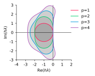
Butcher tableau
- Any explicit Runge–Kutta method with $s+1$ stages can be represented
using a triangular grid of coefficients called the Butcher tableau \[ \small\begin{array}{c|ccccc} \alpha_0 & & & & & \\ \alpha_1 & \beta_{1,0} & & & & \\ \vdots & \vdots& & & & \\ \alpha_s & \beta_{s,0} & \beta_{s,1} & \ldots & \beta_{s,s-1} & \\ \hline & \gamma_0 & \gamma_1& \ldots& \gamma_{s-1}& \gamma_s\\ \end{array} \] - The $i$-th intermediate step is \[ k_i=\textstyle f(t_k+\alpha_ih,y_k+h\sum_{j=0}^{i-1} \beta_{i,j} k_j) \]
- The solution is updated as \[ \textstyle y_{k+1} = y_k + h\sum_{j=0}^s \gamma_j k_j \]
Richardson Extrapolation
- Richardson extrapolation is a general approach
to analyze error and improve accuracy - Treats the approximation as a “black box”
- Assume that $Y(h)$ is an approximation to $y$ that depends
on a discretization parameter $h>0$ and the error has the form \[ Y(h) - y = Ch^p + \mathcal{O}(h^{p+1}) \] - Some parameters here may be known or unknown
- exact solution $y$
- order of accuracy $p$
- factor of the leading error term $C$
Richardson Extrapolation
- We can evaluate $Y(h)$ for various $h$ to eliminate the unknowns
- For example, if $p$ is known we can evaluate $Y(2h)$ and $Y(h)$ \[ \begin{align*} Y(2h) - y &= C2^ph^p + \mathcal{O}(h^{p+1}) \\ Y(h) - y &= Ch^p + \mathcal{O}(h^{p+1}) \end{align*} \]
Richardson Extrapolation
- If we multiply the second equation by $2^p$ \[ \begin{align*} Y(2h)-y &= C2^p h^p + \mathcal{O}(h^{p+1}) \\ 2^p(Y(h) - y) &= C 2^p h^p + \mathcal{O}(h^{p+1}) \end{align*} \] and eliminate $C2^p h^p$, we get a higher-order approximation to $y$ \[ y = \frac{1}{2^p - 1} \big[2^p Y(h) - Y(2h)\big] + \mathcal{O}(h^{p+1}) \]
- The corresponding error estimate is \[ Y(h) - y = \frac{1}{2^p - 1} \big[Y(2h)-Y(h)\big] + \mathcal{O}(h^{p+1}) \]
Error Estimation
- How can we compute the solution error
without knowing the exact solution? - Two approaches to estimate the error
- Richardson extrapolation
- include an error estimate in the derivation of the method
Error Estimation
- First approach: Richardson extrapolation
- Let $Y(h)$ be an approximation to $y(t)$
by a Runge–Kutta method of order $p$ with a time step $h$ \[ Y(h) - y(t) = Ch^p + \mathcal{O}(h^{p+1}) \] - Evaluate $Y(h)$ and $Y(h/2)$ to construct an approximation of order $p+1$ \[ y(t) = \frac{1}{2^p - 1}[2^pY(h/2)-Y(h)] + \mathcal{O}(h^{p+1}) \]
- The corresponding error estimate is \[ Y(h/2) - y(t) = \frac{1}{2^p - 1}[Y(h)-Y(h/2)] + \mathcal{O}(h^{p+1}) \]
- See [examples/unit3/richardson.py] and [examples/unit3/richardson2.py]
applying Richardson extrapolation to each step of forward Euler (i.e. $t=h$)
Error Estimation
- Second approach: derive Butcher tableaus with
an additional higher-order formula for estimating error - Fehlberg’s order 4(5) method RKF45
- $y_{k+1}$ is order 4, $\hat{y}_{k+1}$ is order 5, $y_{k+1}-\hat{y}_{k+1}$ is an error estimate
\[ \def\arraystretch{1.25} \begin{array}{c|cccccc} 0 & & & & & \\ \frac{1}{4} & \frac{1}{4} & & & & & \\ \frac{3}{8} & \frac{3}{32} &\frac{9}{32} & & & & \\ \frac{12}{13} & \frac{1932}{2197} & -\frac{7200}{2197} & \frac{7296}{2197} & & &\\ 1 & \frac{439}{216} & -8 & \frac{3680}{513} & -\frac{845}{4104} & &\\ \frac{1}{2} & \frac{-8}{27} & 2 & \frac{-3544}{2565} & \frac{1859}{4104} & \frac{-11}{40} & \\ \hline y_{k+1} & \frac{25}{216} & 0 & \frac{1408}{2565} & \frac{2197}{4104} & -\frac{1}{5} & 0 \\ \hat{y}_{k+1} & \frac{16}{135} & 0 & \frac{6656}{12825} & \frac{28561}{56430} & -\frac{9}{50} & \frac{2}{55} \end{array} \]
- Fehlberg, 1969. Low-order classical Runge-Kutta formulas with stepsize control and their application to some heat transfer problems. NASA
Higher-Order Methods
- Fehlberg’s order 7(8) method RKF78
\[ \def\arraystretch{1.25} \begin{array}{c|ccccccccccccc}\textstyle 0 & & & & & & & & & & & & & \\ \frac 2{27} & \frac 2{27} & & & & & & & & & & & & \\ \frac 19 & \frac 1{36} & \frac 1{12} & & & & & & & & & & & \\ \frac 16 & \frac 1{24} & 0 & \frac 18 & & & & & & & & & & \\ \frac 5{12} & \frac 5{12} & 0 & -\frac{25}{16} & \frac{25}{16} & & & & & & & & & \\ \frac 12 & \frac 1{20} & 0 & 0 & \frac 14 & \frac 15 & & & & & & & & \\ \frac 56 & -\frac{25}{108} & 0 & 0 & \frac{125}{108} & -\frac{65}{27} & \frac{125}{54} & & & & & & & \\ \frac 16 & \frac{31}{300} & 0 & 0 & 0 & \frac{61}{225} & -\frac 29 & \frac{13}{900} & & & & & & \\ \frac 23 & 2 & 0 & 0 & -\frac{53}6 & \frac{704}{45} & -\frac{107}9 & \frac{67}{90} & 3 & & & & & \\ \frac 13 & -\frac{91}{108} & 0 & 0 & \frac{23}{108} & -\frac{976}{135} & \frac{311}{54} & -\frac{19}{60} & \frac{17}6 & -\frac 1{12} & & & & \\ 1 & \frac{2383}{4100} & 0 & 0 & -\frac{341}{164} & \frac{4496}{1025} & -\frac{301}{82} & \frac{2133}{4100} & \frac{45}{82} & \frac{45}{164} & \frac{18}{41} & & & \\ 0 & \frac 3{205} & 0 & 0 & 0 & 0 & -\frac 6{41} & -\frac 3{205} & -\frac 3{41} & \frac 3{41} & \frac 6{41} & 0 & & \\ 1 & -\frac{1777}{4100} & 0 & 0 & -\frac{341}{164} & \frac{4496}{1025} & -\frac{289}{82} & \frac{2193}{4100} & \frac{51}{82} & \frac{33}{164} & \frac{12}{41} & 0 & 1 & \\ \hline y_{k+1} & \frac{41}{840} & 0 & 0 & 0 & 0 & \frac{34}{105} & \frac 9{35} & \frac 9{35} & \frac 9{280} & \frac 9{280} & \frac{41}{840} & 0 & 0 \\ \hat{y}_{k+1} & 0 & 0 & 0 & 0 & 0 & \frac{34}{105} & \frac 9{35} & \frac 9{35} & \frac 9{280} & \frac 9{280} & 0 & \frac{41}{840} & \frac{41}{840} \end{array} \]
- See implementation in [examples/unit3/fehlberg.py]
- Fehlberg, 1968. Classical fifth-, sixth-, seventh-, and eighth-order
Runge-Kutta formulas with stepsize control. NASA
Higher-Order Methods: Stability
- Stability region of Fehlberg’s order 7 method (13 stages)
compared to order $p$ Runge–Kutta methods

Stiff systems
- A system of linear ODEs \[ y' = Ay \] is called stiff if the eigenvalues of $A$ differ greatly in magnitude
- Recall that if $A = V \Lambda V^{-1}$ with a diagonal matrix of eigenvalues $\Lambda$,
then substitution $y=Vz$ reduces the system to $z'=\Lambda z$.
Therefore, eigenvalues determine the timescales - If the differences in eigenvalues are large,
we need to resolve multiple timescales simultaneously
Stiff systems
- Suppose we are interested only in the slow components of the solution
and can ignore the fast components - However, an explicit method will need to resolve the fast components
to avoid instability - Therefore, it may be beneficial to use an implicit method for stiff systems
Stiff systems
- From a practical point of view, an ODE is considered stiff
if there is a significant benefit in using an implicit method instead of explicit - In particular, the time step required for stability is much smaller
than what is required for accuracy - Consider $y' = Ay$, $y_0 = [1, 0]^T$ where \[ A = \left[ \begin{array}{cc} 998 & 1998\\ -999 & -1999 \end{array} \right] \] which has $\lambda_1 = -1$, $\lambda_2 = -1000$ and exact solution \[ y(t) = \left[ \begin{array}{cc} 2e^{-t} - e^{-1000t}\\ -e^{-t} + e^{-1000t} \end{array} \right] \]
- See [examples/unit3/stiff.py] and [examples/unit3/stiff2.py]
Multistep Methods
- To obtain a high-order approximation
one-step methods use multiple function evaluations - Can we reuse data from earlier time steps instead?
- This is the idea of multistep methods \[ y_{k+1} = \sum_{i=1}^m \alpha_i y_{k+1-i} + h \sum_{i=0}^m\beta_if(t_{k+1-i},y_{k+1-i}) \]
- If $\beta_0 = 0$ then the method is explicit
- Interpolate the solution and integrate the interpolant
to derive the parameters
Multistep Methods
- See [examples/unit3/adams.py], second-order Adams–Bashforth method
- Question: Multistep methods require data from
several earlier time steps, so how do we initialize? - Answer: The standard approach is to use a one-step method
and then move to multistep after collecting enough data - Advantages of one-step methods over multistep
- one-step methods are “self-starting”, only need the initial condition
- easier to adapt the time step size
Boundary Value Problems for ODEs
Boundary Value Problems for ODEs
- Consider a second-order linear ODE
\[
-\alpha u''(x) + \beta u'(x) + \gamma u(x) = f(x)
\]
for $x \in [a,b]$ with given parameters $\alpha, \beta, \gamma \in \mathbb{R}$
and function $f : \mathbb{R}\to \mathbb{R}$ - The terms in this ODE have standard names
- diffusion term $-\alpha u''(x)$
- advection term $\beta u'(x)$
- reaction term $\gamma u(x)$
- source term $f(x)$
Boundary Value Problems for ODEs
- A boundary value problem (BVP) for a second-order linear ODE
consists of \[ -\alpha u''(x) + \beta u'(x) + \gamma u(x) = f(x) \] and boundary conditions (BCs) at $x=a$ and $x=b$ - Standard types of boundary conditions
- Dirichlet condition: $u(a) = c_1$
- Neumann condition: $u'(a) = c_1$
- Robin (or “mixed”) condition: $u'(a) + c_2u(a) = c_3$
Shooting Method
- The shooting method solves the boundary value problem
iteratively by solving an initial value problem at each iteration - To form a correct IVP starting from $x=a$ for a second-order equation,
we need two conditions at $x=a$- one condition is part of the BVP
- another condition is imposed with an unknown parameter
- For example, with two Dirichlet conditions $u(a)=c_1$ and $u(b)=c_2$,
we can additionally specify $u'(a)=g$ - Solve the IVP, and somehow update $g$ to improve the error $|u(b) - c_2|$
- Not widely used as it relies on nonlinear optimization
and does not generalize to PDEs
Shooting Method: Example
- Steady-state diffusion-reaction equation ($\alpha=1, \gamma=-5$) \[ -\alpha u''(x) + \gamma u(x) = 0,\quad x\in[0,1] \]
- Dirichlet conditions: $u(0)=0$ and $u(1)=0.5$
and extra Neumann condition: $u(0)=g$ - Iteration: $g_\text{new} = g + \eta(0.5 - u(1))$ with $\eta=2$
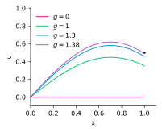
- See [examples/unit3/shooting.py]
ODEs: BVP
- A more general approach is to formulate a coupled system
of equations for the BVP based on a finite difference approximation - Suppose we have a grid \[ x_i = a + ih, \;\;i=0,1,\ldots,n-1 \] where $h = (b-a)/(n-1)$
- Then our approximation to $u(x)$ is represented by a vector $U \in \mathbb{R}^{n}$,
where $U_i \approx u(x_i)$
ODEs: BVP
- Recall the ODE \[ -\alpha u''(x) + \beta u'(x) + \gamma u(x) = f(x), \quad x \in [a,b] \]
- Let’s develop an approximation for each term in the ODE
- For the reaction term $\gamma u$, we have the pointwise approximation \[ \gamma U_i \approx \gamma u(x_i) \]
ODEs: BVP
- Similarly, for the derivatives
- Let $D_2 \in \mathbb{R}^{n\times n}$ be the differentiation matrix for the second derivative
- Let $D_1 \in \mathbb{R}^{n\times n}$ be the differentiation matrix for the first derivative
- Then $-\alpha (D_2 U)_i \approx -\alpha u''(x_i)$ and $\beta (D_1 U)_i \approx \beta u'(x_i)$
- Hence, we obtain $(AU)_i \approx -\alpha u''(x_i) + \beta u'(x_i) + \gamma u(x_i)$, where $A \in \mathbb{R}^{n\times n}$ is \[ \htmlClass{color5}{ A = -\alpha D_2 + \beta D_1 + \gamma{\rm I}} \]
- Similarly, we represent the right hand side by sampling $f$ at the grid points,
so we introduce $F \in \mathbb{R}^{n}$, where $F_i = f(x_i)$
ODEs: BVP
- Therefore, we obtain the linear system for $U \in \mathbb{R}^{n}$
\[ \htmlClass{color1}{ A U = F} \] - We have converted a linear differential equation
into a linear algebraic equation - Similarly, we can convert a nonlinear differential
equation into a nonlinear algebraic system - Now we need to account for the boundary conditions
ODEs: BVP
- Dirichlet boundary conditions
we need to impose $U_0 = c_1$, $U_{n-1} = c_2$ - Since we fix $U_0$ and $U_{n-1}$, they are no longer variables:
we can eliminate them from our linear system - However, instead of removing rows and columns from $A$,
it is more convenient to- “zero out” first row of $A$, then set $A(0,0) = 1$ and $F_0 = c_1$
- “zero out” last row of $A$, then set $A(n-1,n-1) = 1$ and $F_{n-1} = c_2$
ODEs: BVP
- See [examples/unit3/ode_bvp.py]
- Convergence study:
$h$ error $2.0\times 10^{-2}$ $5.07\times 10^{-3}$ $1.0\times 10^{-2}$ $1.26\times 10^{-3}$ $5.0\times 10^{-3}$ $3.17\times 10^{-4}$ $2.5\times 10^{-3}$ $7.92\times 10^{-5}$ - $O(h^2)$, as expected due to second-order differentiation matrices
Method of Manufactured Solutions
- The method of manufactured solutions
is a technique for testing the implementation- choose a solution $u$ that satisfies the boundary conditions
- substitute into the ODE to get a right-hand side $f$
- compute the ODE approximation with $f$ from step 2
- verify that you get the expected convergence rate
for the approximation to $u$
- For example, consider $x \in [0,1]$ and set $u(x) = e^x\sin(2\pi x)$ \[ \begin{aligned} f(x) &= -\alpha u''(x) + \beta u'(x) + \gamma u(x)\\ &= -\alpha e^x\left[4\pi \cos(2\pi x) + (1-4\pi^2)\sin(2\pi x)\right] +\\ &+ \beta e^x\left[\sin(2\pi x) + 2\pi\cos(2\pi x)\right] + \gamma e^x\sin(2\pi x)\end{aligned} \]
Derivatives in BCs
- Question: How would we impose the Robin boundary condition
$u'(b) + c_2u(b) = c_3$, and preserve the $O(h^2)$ convergence rate? - Option 1: Introduce a ghost node at $x_n = b + h$,
this node is involved in both the BC and the $(n-1)$-th matrix row - Employ central difference approx. to $u'(b)$ to get approx. B.C.: \[ \frac{U_{n} - U_{n-2}}{2h} + c_2 U_{n-1} = c_3, \] or equivalently \[ U_{n} = U_{n-2} - 2hc_2 U_{n-1} + 2hc_3 \]
Derivatives in BCs
- The $(n-1)$-th equation is \[ -\alpha \frac{U_{n-2} - 2U_{n-1} + U_{n}}{h^2} + \beta \frac{U_{n} - U_{n-2}}{2h} + \gamma U_{n-1} = F_{n-1} \]
- We can substitute our expression for $U_{n}$ into the above equation,
and hence eliminate $U_{n}$ \[ \htmlClass{color1}{ \left(-\frac{2\alpha c_3}{h} + \beta c_3\right)} - \frac{2\alpha}{h^2}U_{n-2} + \left(\frac{2 \alpha}{h^2}(1+hc_2) - \beta c_2 + \gamma\right)U_{n-1} = F_{n-1} \] - Set $F_{n-1} \leftarrow F_{n-1} - \htmlClass{color1}{ \left(-\frac{2\alpha c_3}{h} + \beta c_3\right)}$, we get $n\times n$ system $AU = F$
- Option 2: Use a one-sided finite-difference formula for $u'(b)$ in the Robin BC
Partial Differential Equations
Partial Differential Equations
- As discussed in the introduction, it is a natural extension to consider Partial Differential Equations (PDEs)
- There are three main classes of PDEs:
equation type prototypical example equation hyperbolic wave equation $u_{tt} -u_{xx} = 0$ parabolic heat equation $u_t - u_{xx} = f$ elliptic Poisson equation $u_{xx} + u_{yy} = f$ - Question: Where do these names come from?
Partial Differential Equations
- Answer: The names are related to conic sections
- General second-order PDEs have the form
\[ au_{xx} + bu_{xy} + c u_{yy} + du_x + e u_y + f u + g = 0 \]
- This looks like the quadratic function \[ q(x,y) = ax^2 + bxy + cy^2 + dx + ey \]
PDEs: Hyperbolic
- Wave equation: $u_{tt} - u_{xx} = 0$
- Corresponding quadratic function is $q(x,t) = t^2 - x^2$
- $q(x,t) = c$ gives a hyperbola, e.g. for $c=0,2,4,6$, we have
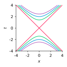
PDEs: Parabolic
- Heat equation: $u_{t} - u_{xx} = 0$
- Corresponding quadratic function is $q(x,t) = t - x^2$
- $q(x,t) = c$ gives a parabola, e.g. for $c=0,2,4,6$, we have
PDEs: Elliptic
- Poisson equation: $u_{xx} + u_{yy} = f$
- Corresponding quadratic function is $q(x,y) = x^2 + y^2$
- $q(x,y) = c$ gives an ellipse, e.g. for $c=0,2,4,6$, we have
PDEs
- In general, it is not so easy to classify PDEs using conic section naming
- Many problems don’t strictly fit into the classification scheme
(e.g. nonlinear, or higher order, or variable coefficient equations) - Nevertheless, the names hyperbolic, parabolic, elliptic are the standard ways of describing PDEs, based on the criteria:
- Hyperbolic: time-dependent, conservative physical process,
no steady state - Parabolic: time-dependent, dissipative physical process,
evolves towards steady state - Elliptic: describes systems at equilibrium/steady-state
- Hyperbolic: time-dependent, conservative physical process,
Hyperbolic PDEs
- We introduced the wave equation $u_{tt} - u_{xx} = 0$ above
- Note that the system of first order PDEs \[ \begin{aligned} u_t + v_x &= 0\\ v_t + u_x &= 0\end{aligned} \] is equivalent to the wave equation, since \[ u_{tt} = (u_t)_t = (-v_x)_t = -(v_t)_x = -(-u_x)_x = u_{xx} \]
- This assumes that $u$, $v$ are smooth,
so we can switch the order of the partial derivatives
Hyperbolic PDEs
- Hence we will focus on the linear advection equation \[ u_t + cu_x = 0 \] with initial condition $u(x,0) = u_0(x)$, and $c \in \mathbb{R}$
- This equation is representative of hyperbolic PDEs in general
- This is a first order PDE and does not correspond to a conic section
- However, it is still considered hyperbolic since it is
- time-dependent
- conservative
- not evolving toward steady state
Hyperbolic PDEs
- We can see that $u(x,t) = u_0(x - ct)$ satisfies the PDE
- Let $z(x,t) = x - ct$, then from the chain rule we have \[ \begin{aligned} \frac{\partial}{\partial t}u_0(x - ct) + c\frac{\partial}{\partial x}u_0(x - ct) &= \frac{\partial}{\partial t}u_0(z(x,t)) + c\frac{\partial}{\partial x}u_0(z(x,t))\\ &= u_0'(z)\frac{\partial z}{\partial t} + c u_0'(z)\frac{\partial z}{\partial x}\\ &= -c u_0'(z) + c u_0'(z)\\ &= 0\end{aligned} \]
Hyperbolic PDEs
- This tells us that the equation transports (or advects)
the initial condition with “speed” $c$\[ u_t + cu_x = 0 \]
- For example, with $c=1$ and an initial condition $u_0(x) = e^{-(1-x)^2}$
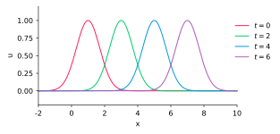
Characteristics
- We can understand the behavior of hyperbolic PDEs in more detail
by considering characteristics - Characteristics are paths $(X(t),t)$ in the $xt$-plane
on which the solution is constant - For $u_t + cu_x = 0$ we have $X(t) = X_0 + ct$, since \[ \begin{aligned} \frac{\text{d}}{\text{d}t}u(X(t),t) &= u_t(X(t),t) + u_x(X(t),t)\frac{\text{d}X(t)}{\text{d}t}\\ &= u_t(X(t),t) + cu_x(X(t),t)\\ &= 0\end{aligned} \]
Characteristics
- Hence $u(X(t),t) = u(X(0),0) = u_0(X_0)$,
i.e. the initial condition is transported along characteristics - Characteristics have important implications for the direction of
flow of information, and for boundary conditions
$c>0$, must impose BC at $x=a$
cannot impose BC at $x=b$
$c<0$, must impose BC at $x=b$
cannot impose BC at $x=a$
Characteristics
- More generally, if we have a non-zero right-hand side in the PDE,
then the situation is a bit more complicated on each characteristic - Consider $u_t + cu_x = f(t,x,u(t,x))$, and $X(t) = X_0 + ct$ \[ \begin{aligned} \frac{\text{d}}{\text{d}t}u(X(t),t) &= u_t(X(t),t) + u_x(X(t),t)\frac{\text{d}X(t)}{\text{d}t}\\ &= u_t(X(t),t) + cu_x(X(t),t)\\ &= f(t,X(t),u(X(t),t))\end{aligned} \]
- In this case, the solution is no longer constant on $(X(t),t)$,
but we have reduced a PDE to a set of ODEs, so that \[ \htmlClass{color5}{ u(X(t),t) = u_0(X_0) + \int_0^t f(t,X(t),u(X(t),t)\text{d}t} \]
Characteristics
- We can also find characteristics for advection
with a variable coefficient - Exercise: Verify that the characteristic curve for \[ u_t + c(t,x)u_x = 0 \] is given by \[ X'(t) = c(X(t),t) \]
- In this case, we have to solve an ODE
to obtain the curve $(X(t),t)$ in the $xt$-plane
Example: Variable Speed in Space
- Equation: $u_t+cu_x=0$ with $c(x,t) = x - 1$
- Characteristics satisfy $X'(t)=c(X(t), t)$
with solution $X(t) = 1 + (X_0 - 1)e^{t}$ - Characteristics “bend away” from $x=1$
Example: Variable Speed in Time
- Equation: $u_t+cu_x=0$ with $c(x,t) = t - 1$
- Characteristics satisfy $X'(t)=c(X(t), t)$
with solution $X(t) = X_0 + \tfrac{1}{2}t^2 - t$ - The same shape shifted along $x$
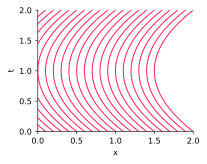
Hyperbolic PDEs: Numerical Approximation
- We now consider how to solve \[ u_t + cu_x = 0 \] using a finite difference method
- Question: Why finite differences? Why not just use characteristics?
- Answer: Characteristics actually are a viable option for computational methods, and are used in practice
- However, characteristic methods can become very complicated in 2D or 3D, or for nonlinear problems
- Finite differences are a much more practical choice
Hyperbolic PDEs: Numerical Approximation
- We impose an initial condition and a boundary condition
- A finite difference approximation is performed on a grid in the $xt$-plane
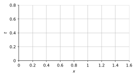
Hyperbolic PDEs: Numerical Approximation
- The first step in developing a finite difference approximation
is to consider the Courant–Friedrichs–Lewy (CFL) condition - The CFL condition is a necessary condition for the convergence
of a finite difference approximation of a hyperbolic problem - Suppose we discretize $u_t + cu_x = 0$ in space and time using the explicit scheme \[ \frac{U_j^{n+1} - U_j^n}{\Delta t} + c \frac{U_j^{n} - U_{j-1}^n}{\Delta x} = 0 \]
- Here $U_j^n \approx u(t_n,x_j)$, where $t_n = n\Delta t$, $x_j = j\Delta x$
Hyperbolic PDEs: Numerical Approximation
- This can be rewritten as \[ \begin{aligned} U_j^{n+1} &= U_j^n - \frac{c\Delta t}{\Delta x} (U_j^n - U^n_{j-1})\\ &= (1-\nu)U^n_j + \nu U^n_{j-1}\end{aligned} \] where \[ \nu = \frac{c\Delta t}{\Delta x} \]
- We can see that $U_j^{n+1}$ depends only on $U_j^n$ and $U_{j-1}^n$
Hyperbolic PDEs: Numerical Approximation
- The set of grid nodes on which $U_j^{n+1}$ depends
is called the domain of dependence of $U_j^{n+1}$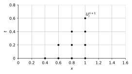
Hyperbolic PDEs: Numerical Approximation
- The domain of dependence of the exact solution $u(t_{n+1},x_j)$
is determined by the characteristics passing through $(t_{n+1},x_j)$ - The CFL condition states
For a convergent scheme, the domain of dependence of the PDE must lie within the domain of dependence of the numerical method
Hyperbolic PDEs: Numerical Approximation
- Domain of dependence of $U_j^n$: grid nodes •
- Domain of dependence of $u(t_{n+1}, x_j)$: solid line (characteristic)
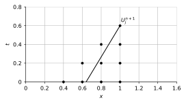
- In this case, the scheme satisfies the CFL condition
Hyperbolic PDEs: Numerical Approximation
- With a larger advection speed $c$,
the scheme does not satisfy the CFL condition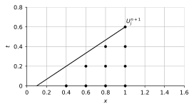
Hyperbolic PDEs: Numerical Approximation
- With a negative advection speed ($c<0$),
the scheme does not satisfy the CFL condition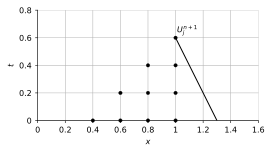
Hyperbolic PDEs: Numerical Approximation
- Question: What goes wrong if the CFL condition is violated?
- Answer: The exact solution $u(x,t)$ depends on initial value $u_0(x_0)$,
which is outside the scheme’s domain of dependence - Therefore, the numerical approximation to $u(x,t)$ is “insensitive”
to the value $u_0(x_0)$, which means that the method cannot be convergent
Hyperbolic PDEs: Numerical Approximation
- If $c > 0$, then we require $\nu = \frac{c\Delta t}{\Delta x} \leq 1$
for the CFL condition to be satisfied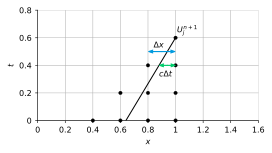
Hyperbolic PDEs: Numerical Approximation
- Note that CFL is only a necessary condition for convergence
- However, CFL is straightforward to test and allows us
to easily reject improper schemes or parameters - For example, for $u_t + cu_x = 0$, the scheme with a backward difference \[ \frac{U_j^{n+1} - U_j^n}{\Delta t} + c \frac{U_j^{n} - U_{j-1}^n}{\Delta x} = 0 \] cannot be convergent if $c < 0$
- Question: How should we modify the scheme for $c < 0$?
Hyperbolic PDEs: Upwind Method
- Answer: The method should account for the direction of “information flow”
- This motivates the upwind scheme for $u_t + cu_x = 0$ \[ U_j^{n+1} = \begin{cases} U_j^n - c \frac{\Delta t}{\Delta x} (U_j^n - U^n_{j-1}), \quad \text{if } c > 0\\ U_j^n - c \frac{\Delta t}{\Delta x} (U_{j+1}^n - U^n_j), \quad \text{if } c < 0 \end{cases} \]
- The upwind scheme satisfies CFL condition if $|\nu|= |c\Delta t / \Delta x| \leq 1$
- $\nu=c\Delta t / \Delta x$ is called the CFL number (or the Courant number)
Hyperbolic PDEs: Central Difference
- Another method that seems appealing is the central difference method \[ \frac{U_j^{n+1} - U_j^n}{\Delta t} + c \frac{U_{j+1}^{n} - U_{j-1}^n}{2 \Delta x} = 0 \] 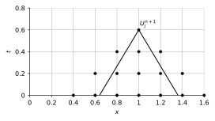
- It satisfies CFL for $|\nu| = |c\Delta t / \Delta x| \leq 1$ both for $c>0$ and $c<0$
- However, we will see that this method is unstable
Hyperbolic PDEs: Accuracy
- Recall that truncation error is
the residual of the numerical approximation
evaluated on the exact solution - For the ($c>0$) upwind method, the truncation error is: \[ T^n_j = \frac{u(t^{n+1},x_j) - u(t^n,x_j)}{\Delta t} + c \frac{u(t^n,x_j) - u(t^n,x_{j-1})}{\Delta x} \]
- The order of accuracy is then the largest $p$ such that \[ T^n_j = \mathcal{O}((\Delta x)^p + (\Delta t)^p) \]
Hyperbolic PDEs: Accuracy
- For the upwind method, we have \[ T_j^n = \frac{1}{2}\left[ \htmlClass{color5}{ \Delta t} u_{tt}(t^n,x_j) - c\htmlClass{color5}{ \Delta x} u_{xx}(t^n,x_j)\right] + \text{h.o.t.} \quad \htmlClass{color5}{ } \]
- Hence the upwind scheme is first order accurate
Hyperbolic PDEs: Accuracy
- Just like with ODEs, truncation error is related to convergence
to the exact solution as $\Delta t, \Delta x \to 0$ - Note that to let $\Delta t, \Delta x \to 0$, we generally need to decide
on a relationship between $\Delta t$ and $\Delta x$ - For example, to let $\Delta t, \Delta x \to 0$ for the upwind scheme,
we would set $\frac{c\Delta t}{\Delta x} = \nu \in (0,1]$.
This ensures CFL is satisfied for all $\Delta x, \Delta t$
Hyperbolic PDEs: Accuracy
- In general, convergence of a finite difference method for a PDE
is related to both its truncation error and its stability - Now we will consider how to analyze stability using
the Fourier stability analysis (also called von Neumann analysis)
Hyperbolic PDEs: Stability
- Suppose that $U^n_j$ is periodic on a grid $x_1,x_2,\ldots, x_n$
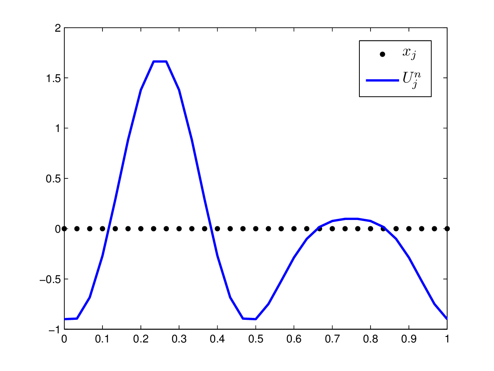
Hyperbolic PDEs: Stability
- Then we can represent $U^n_j$ as a linear combination
of $\sin$ and $\cos$ functions, i.e. Fourier modes
- Equivalently, as a linear combination of complex exponentials,
since $e^{i kx} = \cos(kx) + i\sin(kx)$ so that \[ \textstyle \sin(x) = \frac{1}{2i}(e^{ix} - e^{-ix}), \qquad \cos(x) = \frac{1}{2}(e^{ix} + e^{-ix}) \]
Hyperbolic PDEs: Stability
- Let’s focus on only one of the Fourier modes
- In particular, we consider the ansatz $U^n_j(k) = \lambda(k)^n e^{i k x_j}$,
where $k$ is the wave number and $\lambda(k) \in \mathbb{C}$ - Key idea: Suppose that $U^n_j(k)$ satisfies our
finite difference equation, then this will allow us to solve for $\lambda(k)$ - The value of $|\lambda(k)|$ indicates whether
the Fourier mode $e^{i k x_j}$ is amplified or damped - If $|\lambda(k)| \leq 1$ for all $k$ then the scheme
does not amplify any Fourier modes, therefore is stable
Hyperbolic PDEs: Stability
- We now perform Fourier stability analysis for
the upwind scheme with $c>0$ (recall that $\nu = \frac{c\Delta t}{\Delta x}$): \[ U^{n+1}_j = U_j^n - \nu (U_j^n - U^n_{j-1}) \] - Substituting in $U^n_j(k) = \lambda(k)^n e^{i k (j\Delta x)}$ gives \[ \begin{aligned} \lambda(k) e^{i k (j\Delta x)} &= e^{i k (j\Delta x)} - \nu (e^{i k (j\Delta x)} - e^{i k ((j-1)\Delta x)})\\ &= e^{i k (j\Delta x)} - \nu e^{i k (j\Delta x)}(1 - e^{-ik\Delta x)})\end{aligned} \]
- Then \[ \lambda(k) = 1 - \nu (1 - e^{-ik\Delta x}) = 1 - \nu (1 - \cos(k\Delta x) + i\sin(k\Delta x)) \]
Hyperbolic PDEs: Stability
- It follows that \[ \begin{aligned} |\lambda(k)|^2 &= [(1-\nu) + \nu \cos(k\Delta x)]^2 + [\nu \sin(k\Delta x)]^2\\ &= (1-\nu)^2 + \nu^2 + 2\nu(1-\nu)\cos(k\Delta x)\\ &= 1 - 2\nu(1-\nu)(1-\cos(k\Delta x))\end{aligned} \] and from the identity $(1 - \cos(\theta)) = 2\sin^2(\frac{\theta}{2})$, we have \[ \htmlClass{color5}{ |\lambda(k)|^2 = 1 - 4\nu(1-\nu)\sin^2\left(\frac{1}{2}k\Delta x\right)} \]
- Due to the CFL condition, we first suppose that $0 \leq \nu \leq 1$
- Then $0 \leq 4\nu(1-\nu)\sin^2\left(\frac{1}{2}k\Delta x\right) \leq 1$, and therefore $|\lambda(k)| \leq 1$
Hyperbolic PDEs: Stability
- In contrast, consider stability of the central difference scheme \[ \frac{U_j^{n+1} - U_j^n}{\Delta t} + c \frac{U_{j+1}^{n} - U_{j-1}^n}{2\Delta x} = 0 \]
- Recall that this also satisfies the CFL condition as long as $\left|\nu\right| \leq 1$
- But Fourier stability analysis yields \[ \lambda(k) = 1 - \nu i \sin(k\Delta x) \implies |\lambda(k)|^2 = 1 + \nu^2\sin^2(k\Delta x) \] and hence $|\lambda(k)| > 1$ (unless $\sin(k\Delta x) = 0$), i.e. unstable!
Consistency
- We say that a numerical scheme is consistent with a PDE
if its truncation error tends to zero as $\Delta x, \Delta t \to 0$ - For example, any first (or higher) order scheme is consistent
Lax Equivalence Theorem
- Then a fundamental theorem about finite difference schemes
is the Lax equivalence theoremFor a consistent finite difference approximation to a linear evolutionary problem, the stability of the scheme is necessary and sufficient for convergence
- This theorem refers to linear evolutionary problems,
e.g. linear hyperbolic or parabolic PDEs - Due to Peter Lax (born 1926, American mathematician)
Lax Equivalence Theorem
- We know how to check consistency: Derive the truncation error
- We know how to check stability: Fourier stability analysis
- Hence, from the Lax equivalence theorem,
we have a general approach for verifying convergence - Also, as with ODEs, convergence rate is determined by truncation error
Lax Equivalence Theorem
- Note that strictly speaking Fourier stability analysis
only applies for periodic problems - However, its conclusions on periodic problems generally hold in other cases
- Fourier stability analysis is the standard tool for examining stability of finite-difference methods for PDEs
- See [examples/unit3/advection.py], one-sided and central difference
schemes for the advection equation
Hyperbolic PDEs: Semi-discretization
- So far, we have developed full discretizations (both space and time)
of the advection equation, and considered accuracy and stability - However, it can be helpful to consider semi-discretizations,
where we discretize only in space, or only in time - For example, discretizing $u_t + c(t,x)u_x = 0$ in space using a backward difference formula gives \[ \frac{\partial U_j(t)}{\partial t} + c_j(t) \frac{U_j(t) - U_{j-1}(t)}{\Delta x} = 0, \qquad j=1,\ldots,n \]
Hyperbolic PDEs: Semi-discretization
- This gives a system of ODEs, $U_t = f(t,U(t))$, where $U(t) \in \mathbb{R}^n$ and \[ f_j(t,U(t)) = - c_j(t) \frac{U_j(t) - U_{j-1}(t)}{\Delta x} \]
- Forward Euler applied to that system yields
the first-order upwind scheme \[ \frac{U_j^{n+1} - U_j^{n}}{\Delta t} = f(t^n,U^n) = - c_j^n \frac{U_j^n - U_{j-1}^n}{\Delta x} \] - Backward Euler yields the implicit first-order upwind \[ \frac{U_j^{n+1} - U_j^{n}}{\Delta t} = f(t^{n+1},U^{n+1}) = - c_j^{n+1} \frac{U_j^{n+1} - U_{j-1}^{n+1}}{\Delta x} \]
Hyperbolic PDEs: Method of Lines
- We can also use a “black box” ODE solver (e.g.
scipy.integrate.odeint)
to solve the system of ODEs - This “black box” approach is called the method of lines
- The name “lines” is because we solve each $U_j(t)$ for a fixed $x_j$,
i.e. a line in the $xt$-plane - We let the ODE solver to choose step size $\Delta t$
to obtain a stable and accurate scheme
Wave Equation
- We now briefly return to the wave equation: \[ u_{tt} - c^2 u_{xx} = 0 \]
- In one spatial dimension, this models vibrations of a string
Wave Equation
- Many schemes have been proposed for the wave equation,
as well as other hyperbolic systems in general - One good option is to use central difference approximations
for both $u_{tt}$ and $u_{xx}$ \[ \frac{U^{n+1}_j - 2U^n_j + U^{n-1}_j}{\Delta t^2} - c^2 \frac{U^n_{j+1} - 2U^n_{j} + U^n_{j-1}}{\Delta x^2} = 0 \] - Key points
- truncation error analysis $\implies$ second-order accurate
- Fourier stability analysis $\implies$ stable for $0 \leq c\Delta t/\Delta x \leq 1$
- two-step method in time, need a one-step method to “get started”
- See [examples/unit3/wave.py] and [examples/unit3/wave_audio.py]
Wave Equation: Example 🔊
- Wave equation with forcing \[ u_{tt} - u_{xx} = f \] 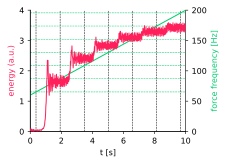
- Energy $\int{u_t^2dx}$
- Sound $\int{u_x^2dx}$ (change in arc length)
- Forcing $f = x \sin(\omega(t) t)$
$\omega(t)=at + b$
Heat Equation
- The canonical parabolic equation is the heat equation \[ u_t - \alpha u_{xx} = f(t,x) \] where $\alpha$ is the thermal diffusivity
- By rescaling $x$ and $t$, we can assume $\alpha=1$
- To form an initial-boundary value problem, we impose
- initial condition $u(0,x) = u_0(x)$
- boundary conditions on both endpoints the domain
Heat Equation
- A natural idea would be to discretize $u_{xx}$ with a central difference,
and employ forward Euler in time \[ \frac{U^{n+1}_j - U^n_j}{\Delta t} - \frac{U^n_{j-1}-2U^n_j + U^n_{j+1}}{\Delta x^2} = 0 \] - Or we could use backward Euler in time
\[ \frac{U^{n+1}_j - U^n_j}{\Delta t} - \frac{U^{n+1}_{j-1}-2U^{n+1}_j + U^{n+1}_{j+1}}{\Delta x^2} = 0 \]
Heat Equation
- Or we could do the midpoint rule in time \[ \frac{U^{n+1}_j - U^n_j}{\Delta t} - \frac{1}{2} \frac{U^{n+1}_{j-1}-2U^{n+1}_j + U^{n+1}_{j+1}}{\Delta x^2} - \frac{1}{2} \frac{U^{n}_{j-1}-2U^{n}_j + U^{n}_{j+1}}{\Delta x^2} = 0 \]
- This is called the Crank–Nicolson method
- Extra reading: Crank & Nicolson, 1947. A practical method for numerical evaluation of solutions of partial differential equations of the heat-conduction type
$\theta$-Method
- The $\theta$-method is a family of methods that includes all of the above
\[ \frac{U^{n+1}_j - U^n_j}{\Delta t} - \theta \frac{U^{n+1}_{j-1}-2U^{n+1}_j + U^{n+1}_{j+1}}{\Delta x^2} - (1-\theta) \frac{U^{n}_{j-1}-2U^{n}_j + U^{n}_{j+1}}{\Delta x^2} = 0 \] where $\theta \in [0,1]$ is a parameter- $\theta = 0 \implies$ forward Euler
- $\theta = \frac{1}{2} \implies$ Crank–Nicolson
- $\theta = 1 \implies$ backward Euler
- For the $\theta$-method, we can
- perform Fourier stability analysis
- calculate the truncation error
$\theta$-Method: Stability
- Fourier stability analysis. Set $U^n_j(k) = \lambda(k)^n e^{ik(j\Delta x)}$ to get \[ \lambda(k) = \frac{1 - 4(1-\theta)\mu \sin^2\left(\frac{1}{2}k\Delta x\right)}{1 + 4\theta\mu\sin^2\left(\frac{1}{2}k\Delta x\right)} \] where $\mu = \Delta t / \Delta x^2$
- In general, $\mu = \alpha\Delta t / \Delta x^2$ is dimensionless
(sometimes called the diffusion number, or diffusion CFL number) - Here we cannot get $\lambda(k) > 1$, hence only concern is $\lambda(k) < -1$
- Let’s find conditions for stability, i.e. we want $\lambda(k) \geq -1$ \[ 1 - 4(1-\theta)\mu\sin^2\left(\frac{1}{2}k\Delta x\right) \geq -\left[1 + 4\theta\mu \sin^2\left(\frac{1}{2}k\Delta x\right) \right] \]
$\theta$-Method: Stability
- Or equivalently \[ 4\mu(1-2\theta)\sin^2\left(\frac{1}{2}k\Delta x\right) \leq 2 \]
- For $\theta \in [0.5,1]$ this inequality is always satisfied,
hence the $\theta$-method is unconditionally stable (i.e. stable independent of $\mu$) - For $\theta \in [0,0.5)$, the “most unstable” Fourier mode is at $k = \pi/\Delta x$,
since this maximizes the factor $\sin^2\left(\frac{1}{2}k\Delta x\right)$
$\theta$-Method: Stability
- Note that this corresponds to the highest frequency mode
that can be represented on our grid, since with $k = \pi/\Delta x$ we have \[ e^{ik(j\Delta x)} = e^{\pi i j} = (e^{\pi i})^j = (-1)^j \] - The $k = \pi/\Delta x$ “sawtooth” mode 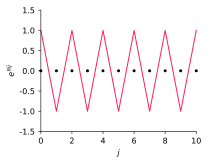
$\theta$-Method: Stability
- This sawtooth mode is stable (and so all modes are stable) if \[ 4\mu(1-2\theta) \leq 2 \Longleftrightarrow \mu \leq \frac{1}{2(1-2\theta)} \]
- Therefore, the $\theta$-method is conditionally stable for $\theta \in [0,0.5)$
$\theta$-Method: Stability
- The $\theta$-method is conditionally stable if $\theta\in[0, 0.5)$
and unconditionally stable if $\theta\in[0.5, 1]$ - Stability region in the $\mu$-$\theta$ plane
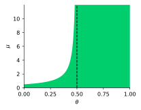
$\theta$-Method: Stability
- Note that $\theta$ in $[0,0.5)$ leads to a severe stability restriction,
since $\Delta t$ is quadratic in $\Delta x$ \[ \textstyle \Delta t \leq \frac{(\Delta x)^2}{2(1-2\theta)} \] - Recall that in the hyperbolic case, $\Delta t$ is linear in $\Delta x$ \[ \textstyle \Delta t \leq \frac{\Delta x}{c} \]
- This indicates that spacial discretization of the heat equation
results in a stiff system of ODEs
$\theta$-Method: Accuracy
- The truncation error analysis gives \[ \begin{aligned} T^n_j &= \frac{u^{n+1}_j - u^n_j}{\Delta t} - \theta \frac{u^{n+1}_{j-1}-2u^{n+1}_j + u^{n+1}_{j+1}}{\Delta x^2} - (1-\theta) \frac{u^{n}_{j-1}-2u^{n}_j + u^{n}_{j+1}}{\Delta x^2}\\ &= [u_t - u_{xx}] + \big[\big(\tfrac{1}{2} - \theta\big)\Delta t u_{xxt} - \tfrac{1}{12}\Delta x^2u_{xxxx}\big]\\ &\qquad + \big[ \tfrac{1}{24}\Delta t^2 u_{ttt} - \tfrac{1}{8}\Delta t^2u_{xxtt}\big]\\ &\qquad + \big[\tfrac{1}{12}\big(\tfrac{1}{2} - \theta\big)\Delta t \Delta x^2 u_{xxxxt} - \tfrac{2}{6!}\Delta x^4 u_{xxxxxx}\big] + \cdots\end{aligned} \]
- The term $u_t - u_{xx}$ in $T^n_j$ vanishes since $u$ solves the PDE
$\theta$-Method: Accuracy
- The method is second order if $\theta = 0.5$, and first order otherwise if $\theta\neq 0.5$
- The $\theta$-method is consistent (i.e. truncation error tends to zero)
and stable (conditionally stable for $\theta \in [0,0.5)$) - Therefore, from the Lax equivalence theorem, the method is convergent
Heat Equation
- Note that the heat equation describes a diffusive process,
so it tends to smooth out discontinuities - See [examples/unit3/heat.py],
forward Euler and Crank-Nicolson schemes for the heat equation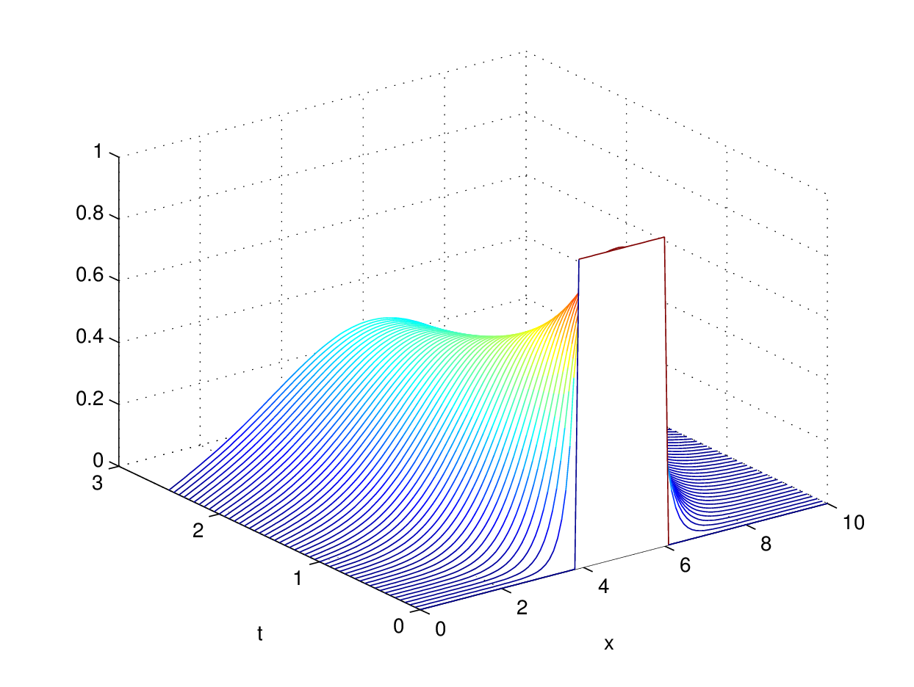
- This is qualitatively different to hyperbolic equations,
e.g. the advection equation will just transport a discontinuity in $u_0$
Elliptic PDEs
- The canonical elliptic PDE is the Poisson equation \[ u_{xx} + u_{yy} = f(x,y) \] for $(x,y)\in\Omega$ in the domain $\Omega \subset \mathbb{R}^2$
- This is generally written as $\nabla^2 u = f$ (or $\Delta u = f$)
- Options for boundary conditions on the domain boundary $\partial \Omega$
- Dirichlet, given value $u$
- Neumann, given normal derivative $\frac{\partial u}{\partial n}$
- Robin (mixed), given linear combination of both
Elliptic PDEs
- We will consider how to use a finite difference scheme
to approximate this 2D Poisson equation - First, introduce a uniform grid to discretize $\Omega$
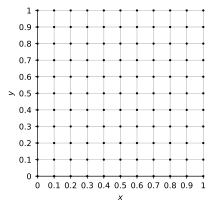
Elliptic PDEs
- Assume equal grid spacing $h = \Delta x = \Delta y$
- Then
- $x_i = ih$, $i=0,1,2\ldots,N_x-1$,
- $y_j = jh$, $j=0,1,2,\ldots,N_y-1$,
- $U_{i,j} \approx u(x_i,y_j)$
- $x_i = ih$, $i=0,1,2\ldots,N_x-1$,
- Use finite differences to approximate $u_{xx}$ and $u_{yy}$ on this grid
Elliptic PDEs
- Each derivative is approximated as \[ u_{xx}(x_i,y_j) = \frac{u(x_{i-1},y_j) - 2u(x_i,y_j) + u(x_{i+1},y_j)}{h^2} + O(h^2) \] \[ u_{yy}(x_i,y_j) = \frac{u(x_{i},y_{j-1}) - 2u(x_i,y_j) + u(x_{i},y_{j+1})}{h^2} + O(h^2) \]
- The Laplacian is approximated as \[ u_{xx}(x_i,y_j) + u_{yy}(x_i,y_j)=\hspace{7cm} \] \[ \quad\frac{u(x_{i},y_{j-1}) + u(x_{i-1},y_j)- 4u(x_i,y_j) + u(x_{i+1},y_j) + u(x_{i},y_{j+1})}{h^2} + O(h^2) \]
Elliptic PDEs
- Using the grid values, the approximation to the Laplacian is \[ u_{xx} + u_{yy} \approx \frac{U_{i,j-1} + U_{i-1,j} - 4U_{i,j} + U_{i+1,j} + U_{i,j+1}}{h^2} \]
- This corresponds to a 5-point stencil

Elliptic PDEs
- We represent the numerical solution as a vector $U\in \mathbb{R}^{N_x N_y}$
- We want to construct a differentiation matrix $D \in \mathbb{R}^{N_x N_y\times N_x N_y}$
that approximates the Laplacian - Question: How many non-zero diagonals will $D$ have?
- To construct $D$, we need to relate the entries of
the one-dimensional vector $U$ to the two-dimensional grid values $U_{i,j}$
(i.e. flatten the grid values)
Elliptic PDEs
- For instance, let’s enumerate the nodes from 0 to $N_xN_y-1$
starting from the bottom row $j=0$ (i.e. row-major order) - Let $G$ denote the mapping from the 2D indexing to the 1D indexing
- From the above schematic we have \[ G(i,j) = jN_x + i \quad \text{and therefore} \quad U_{G(i,j)} = U_{i,j} \]
Elliptic PDEs
- Let’s focus on node $(i,j)$, this corresponds to entry $G(i,j)$ of $U$
- Due to the 5-point stencil, row $G(i,j)$ of $D$
will only have non-zeros in five columns with indices \[ \begin{aligned} G(i,j-1) &= G(i,j)-N_x\\ G(i-1,j) &= G(i,j)-1\\ G(i,j) &= G(i,j)\\ G(i+1,j) &= G(i,j)+1\\ G(i,j+1) &= G(i,j)+N_x \end{aligned} \]
Elliptic PDEs
- The discretization of the equations above
applies in inner nodes, i.e. nodes with indices
\[ i>0,\quad i<N_x-1,\quad j>0,\quad \text{and} \quad j<N_y-1 \] - Impose zero Dirichlet conditions
\[
U_{i,j}=0
\]
on the boundaries, i.e. nodes with indices
\[ i=0,\quad i=N_x-1,\quad j=0,\quad \text{or}\quad j=N_y-1 \] - Other cases (e.g. Neumann conditions) will need to be discretized
accordingly on each boundary
Elliptic PDEs
- For example, in the case $N_x = N_y = 6$,
matrix $D$ has the following sparsity pattern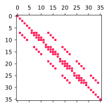
Elliptic PDEs
- Poisson equation $\nabla^2 u = -10$
for $(x,y) \in \Omega = [0,1]^2$ with $u = 0$ on $\partial \Omega$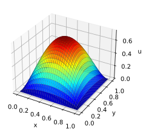
- See [examples/unit3/poisson.py], solved using
scipy.sparse
- Key point: Gauss quadrature weights are always positive,